<!doctype html>
<html lang="en">
<head>
  <meta charset="utf-8">
  <meta name="viewport" content="width=device-width, initial-scale=1">
  <title>arxiv digest — 2026-08-28</title>
  <style>
:root {
  --bg: #ffffff;
  --fg: #1f2328;
  --muted: #59636e;
  --border: #d0d7de;
  --card: #f6f8fa;
  --link: #0969da;
}
body {
  max-width: 980px;
  margin: 0 auto;
  padding: 2rem 1rem 5rem;
  font-family: -apple-system, BlinkMacSystemFont, "Segoe UI", Helvetica, Arial, sans-serif;
  line-height: 1.55;
  color: var(--fg);
  background: var(--bg);
}
a { color: var(--link); }
img { max-width: 100%; height: auto; }
pre, code { background: var(--card); border-radius: 6px; }
pre { padding: 1rem; overflow-x: auto; }
blockquote { border-left: 4px solid var(--border); padding-left: 1rem; color: var(--muted); }
details { margin: 0.6rem 0; }
summary { cursor: pointer; font-weight: 600; }
.paper-figures-scroll {
  display: flex;
  gap: 1rem;
  overflow-x: auto;
  overscroll-behavior-x: contain;
  padding: 0.75rem 0.25rem 1rem;
  margin: 1rem 0 1.25rem;
  border-top: 1px solid var(--border);
  border-bottom: 1px solid var(--border);
  scroll-snap-type: x proximity;
}
.paper-figure-card {
  flex: 0 0 min(260px, 72vw);
  scroll-snap-align: start;
  background: var(--card);
  border: 1px solid var(--border);
  border-radius: 12px;
  padding: 0.55rem;
}
.paper-figure-card img {
  display: block;
  width: 100%;
  max-height: 240px;
  object-fit: contain;
  background: white;
  border-radius: 8px;
}
.paper-figure-caption {
  display: block;
  margin-top: 0.5rem;
  color: var(--muted);
  font-size: 0.85rem;
}
.figure-strip-hint {
  color: var(--muted);
  font-size: 0.9rem;
  margin-bottom: -0.3rem;
}
</style>
  <!-- MathJax: renders $...$ inline math and $$...$$ display math, plus
       \(...\) and \[...\]. Loaded from the official CDN; works offline
       once cached. Configured to skip code/pre blocks so arxiv IDs that
       look like dollar amounts don't get mangled. -->
  <script>
    window.MathJax = {
      tex: {
        inlineMath: [['$', '$'], ['\\(', '\\)']],
        displayMath: [['$$', '$$'], ['\\[', '\\]']],
        processEscapes: true,
        processEnvironments: true
      },
      options: {
        skipHtmlTags: ['script', 'noscript', 'style', 'textarea', 'pre', 'code'],
        ignoreHtmlClass: 'tex2jax_ignore',
        processHtmlClass: 'tex2jax_process'
      }
    };
  </script>
  <script id="MathJax-script" async
    src="https://cdn.jsdelivr.net/npm/mathjax@3/es5/tex-chtml.js"></script>
</head>
<body>
<header style="background-color: #333; color: white; padding: 15px; margin-bottom: 20px;">
  <h1 style="margin: 0; font-size: 24px;">
    <a href="https://ochelpan.github.io/arXiv_clean/" style="color: white; text-decoration: none;">Main</a>
  </h1>
</header>

<h1>Daily arXiv Report</h1>

<hr>
<p>
<a href="index.html">← Index</a>
 · <a href="papers_02.html">← Previous</a> · <a href="papers_04.html">Next →</a>
</p>
<hr>

<h2>Papers 41–60</h2>
<p><a id="paper-2608.25132"></a></p>
<h3 id="the-effects-of-inter-valley-coupling-of-dirac-fermions-near-four-dimensions"><a href="http://arxiv.org/abs/2608.25132v1">The Effects of Inter-Valley Coupling of Dirac Fermions near Four Dimensions</a></h3>
<p><strong>Authors:</strong> S. Thiagarajan, F. Krüger<br>
<strong>Type:</strong> theory · <strong>Category:</strong> strongly correlated electrons · <strong>PDF:</strong> <a href="https://arxiv.org/pdf/2608.25132v1">https://arxiv.org/pdf/2608.25132v1</a><br>
<strong>Analysis basis:</strong> full PDF text, analyzed in chunks
<strong>Topic relevance:</strong> <code>analog quantum simulation</code> <strong>3/5</strong> · <code>Keldysh / 2PI / non-Gaussian methods</code> <strong>2/5</strong></p>
<div class="figure-strip-hint">↔ Scroll figures horizontally</div>
<div class="paper-figures-scroll">
<figure class="paper-figure-card">
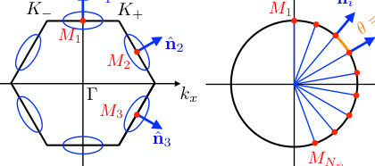
<figcaption class="paper-figure-caption"><b>Fig 1.</b> FIG. 1. (a) Hexagonal Brillouin zone with Dirac valleys at the three M points, as observed at the topological phase transi- tion of the Kitaev QSL in magnetic field along the [111] di- rection [16–19]. The directors ˆni determine the orientation of the local coordinate frames. (b) Generalization to Nψ Dirac points, where the directors of neighboring valleys enclose an angle of θ = π/Nψ.</figcaption>
</figure>
<figure class="paper-figure-card">
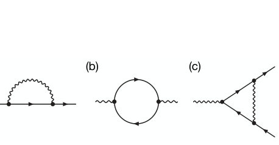
<figcaption class="paper-figure-caption"><b>Fig 2.</b> FIG. 2. Feynman diagrams that correspond to (a) fermionic self-energy corrections, (b) bosonic self-energy corrections, and (c) the renormalization of the Yukawa vertices. The solid lines represent fermionic Grassmann fields, wiggly lines bosonic intra- and inter-valley fluctuation fields.</figcaption>
</figure>
<figure class="paper-figure-card">
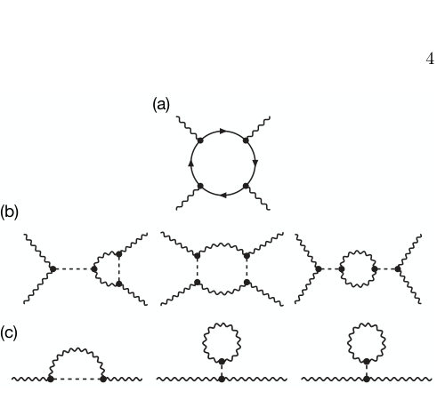
<figcaption class="paper-figure-caption"><b>Fig 3.</b> FIG. 3. Feynman diagrams that correspond to the renor- malization of bosonic interaction vertices by the (a) Yukawa couplings and (b) the bosonic interactions. (c) Diagrams that generate mass terms of the bosonic fluctuation fields.</figcaption>
</figure>
<figure class="paper-figure-card">
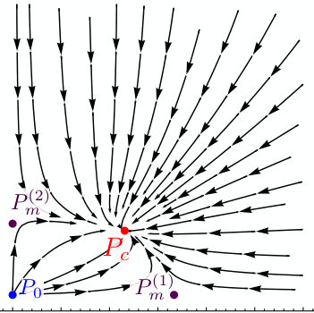
<figcaption class="paper-figure-caption"><b>Fig 4.</b> FIG. 4. RG flow of the intra- and inter-valley Yukawa cou- plings gϕ and gφ for Nψ = 3 valleys. For other Nψ the same qualitative behavior is observed. The critical GNY fixed point P (1) m in the GNY theory of decoupled valleys is unsta- ble against inter-valley coupling, leading to the formation of a new critical fixed point Pc.</figcaption>
</figure>
<figure class="paper-figure-card">
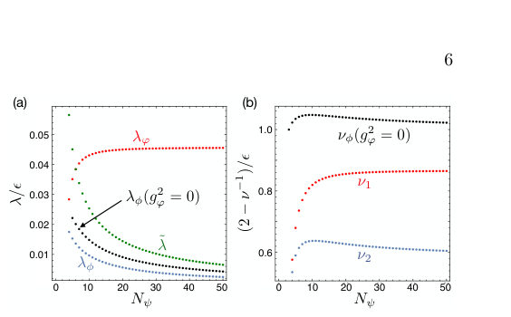
<figcaption class="paper-figure-caption"><b>Fig 5.</b> FIG. 6. (a) Critical values of the bosonic interactions λϕ, λφ, and ˜λ at the GNY fixed point Pc as a function of Nψ. For comparison, the coupling strength λϕ(g2 φ = 0) of the ϕ4 vertex in the GNY theory with decoupled valleys is shown in black. (b) The correlation length exponents ν1 and ν2 as a function of Nψ.</figcaption>
</figure>
</div>

<p><strong>Summary.</strong> This theoretical work investigates the quantum critical behavior of Dirac fermions in a multi-valley system using a renormalization group approach. It finds that inter-valley interactions stabilize a new critical fixed point, which breaks Lorentz invariance. The results are particularly valuable for understanding quantum criticality in materials with multiple degenerate electronic bands.</p>
<p><strong>Why it may be interesting.</strong> The study of critical points in interacting fermion systems, especially those exhibiting topological features like Dirac valleys, is central to understanding strongly correlated materials and quantum phase transitions relevant to condensed matter physics.</p>
<details>
<summary>Detailed structure</summary>
<p><strong>Main problem.</strong> The paper analyzes the quantum criticality of an Ising Gross-Neveu-Yukawa (GNY) theory describing Dirac fermions with both intra- and inter-valley interactions.</p>
<p><strong>Main result.</strong> A new critical fixed point is found where inter-valley coupling is finite, leading to broken Lorentz invariance, although this symmetry is asymptotically restored in the large $N_\psi$ limit.</p>
<p><strong>Method.</strong> The analysis employs a renormalization-group (RG) technique using an $\epsilon$ expansion in $4-\epsilon$ dimensions, calculated to one-loop order.</p>
<p><strong>Model / system.</strong> The model involves $N_\psi$ Dirac fermion valleys, motivated by topological phase transitions (like the Kitaev model), coupled to Ising order parameter fields ($\phi$ and $\varphi_{i, i+1}$).</p>
<p><strong>Key observables.</strong> Critical exponents, anomalous dimensions ($\eta_\psi, \eta_\phi, \eta_\varphi$), dynamical critical exponent ($z$), and correlation-length exponents ($
u_1, 
u_2$).</p>
<p><strong>Important parameters / regimes.</strong> The number of valleys ($N_\psi$), the dimension parameter ($\epsilon$), and the coupling constants ($g_\phi, g_\varphi, \lambda$).</p>
<p><strong>Assumptions / limitations.</strong> The analysis assumes short-ranged interactions and is performed to one-loop order in the continuum field theory approximation.</p>
<p><strong>Figures summary.</strong> Figures illustrate the Brillouin zone with Dirac valleys, Feynman diagrams for self-energy and vertex corrections, and plots showing the RG flow of couplings and critical exponents as a function of $N_\psi$.</p>
<p><strong>Paper structure.</strong> The paper builds from defining the full action and the RG methodology (integrating out UV modes) to deriving the coupled RG flow equations for couplings and velocities, culminating in the determination of the stable critical fixed point $P_c$ and its large-$N_\psi$ limit.</p>
</details>
<details>
<summary>Abstract</summary>
<p>We analyze the criticality of an Ising Gross-Neveu-Yukawa (GNY) theory of $N_ψ$ Dirac fermion valleys with intra- and inter-valley interactions, using a renormalization-group analysis in $4-ε$ space-time dimensions to one-loop order. The conventional GNY fixed point of decoupled valleys is unstable against inter-valley fluctuations which are naturally present if the symmetry breaking is driven by short-ranged interactions. At the new fixed point, the critical exponents differ from the conventional GNY universality. Most importantly, Lorentz invariance is broken due to interference effects resulting from the relative rotation between valley coordinate frames. In the limit of large $N_ψ$ the critical fixed point with finite inter-valley coupling remains stable but Lorentz invariance is asymptotically restored.</p>
</details>
<p><sub><a href="#top">↑ back to top</a></sub></p>

<p><a id="paper-2608.25042"></a></p>
<h3 id="a-unified-framework-for-operator-backpropagation-and-observable-measurement-in-quantum-computing"><a href="http://arxiv.org/abs/2608.25042v1">A Unified Framework for Operator Backpropagation and Observable Measurement in Quantum Computing</a></h3>
<p><strong>Authors:</strong> Kevin Dougherty, Ji Liu<br>
<strong>Type:</strong> theory · <strong>Category:</strong> quantum information and computing · <strong>PDF:</strong> <a href="https://arxiv.org/pdf/2608.25042v1">https://arxiv.org/pdf/2608.25042v1</a><br>
<strong>Analysis basis:</strong> full PDF text, analyzed in chunks
<strong>Topic relevance:</strong> <code>quantum measurements</code> <strong>3/5</strong> · <code>analog quantum simulation</code> <strong>1/5</strong></p>
<div class="figure-strip-hint">↔ Scroll figures horizontally</div>
<div class="paper-figures-scroll">
<figure class="paper-figure-card">
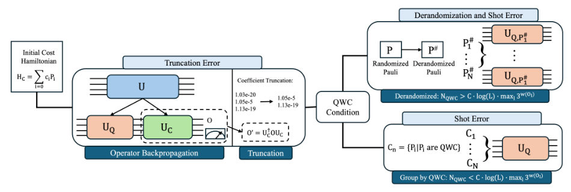
<figcaption class="paper-figure-caption"><b>Fig 1.</b> Fig. 1: Comprehensive framework to determine the appropriate measurement protocol to achieve a desired level of accuracy with the fewest number of measurements based on the number of commuting groups generated from backpropagation.</figcaption>
</figure>
<figure class="paper-figure-card">
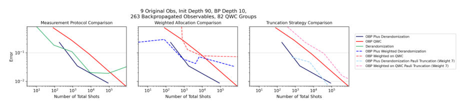
<figcaption class="paper-figure-caption"><b>Fig 2.</b> Fig. 3: Operator Backpropagation-Derandomization Protocol Results on a XYZ Heisenberg Hamiltonian Circuit.</figcaption>
</figure>
<figure class="paper-figure-card">
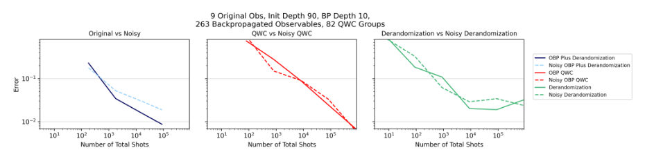
<figcaption class="paper-figure-caption"><b>Fig 3.</b> Fig. 4: Operator Backpropagation-Derandomization Protocol Noisy Results on a XYZ Heisenberg Hamiltonian Circuit.</figcaption>
</figure>
<figure class="paper-figure-card">
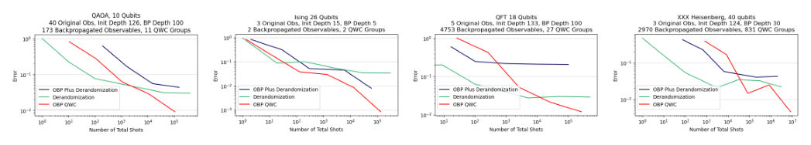
<figcaption class="paper-figure-caption"><b>Fig 4.</b> Fig. 5: Evaluation Results of Operator Backpropagation-Derandomization Protocol on: QAOA, Ising, and QFT Circuits.</figcaption>
</figure>
</div>

<p><strong>Summary.</strong> This paper presents a unified framework to optimize the process of estimating quantum expectation values by combining Operator Backpropagation (OBP) with advanced measurement protocols. It systematically determines the most efficient measurement strategy—choosing between QWC grouping or derandomization—by analyzing accumulated errors and resource scaling. This guides the development of more resource-efficient quantum algorithms for NISQ devices.</p>
<p><strong>Why it may be interesting.</strong> It provides rigorous, resource-aware guidelines for running variational quantum algorithms, which is crucial for designing practical quantum circuits that minimize measurement overhead.</p>
<details>
<summary>Detailed structure</summary>
<p><strong>Main problem.</strong> To develop a unified framework that co-optimizes operator backpropagation and observable measurement protocols to achieve a desired accuracy with the minimum number of measurements.</p>
<p><strong>Main result.</strong> The optimal measurement strategy depends on a trade-off between Qubit-wise Commuting (QWC) grouping and derandomization, leading to a combined OBP-Derandomization protocol that significantly improves efficiency over individual methods.</p>
<p><strong>Method.</strong> The authors propose a framework that analyzes error sources (backpropagation, truncation, shot noise) and selects the measurement protocol by comparing the cost scaling of QWC grouping versus derandomization bounds.</p>
<p><strong>Model / system.</strong> The work is applied to quantum computing circuits, tested on models like the XYZ Heisenberg Hamiltonian, QAOA, Ising, and QFT circuits, relevant for near-term quantum devices.</p>
<p><strong>Key observables.</strong> Expectation values of observables ($\langle O 
angle$), backpropagated observables (linear combinations of Pauli observables), and the measurement cost (number of required measurements).</p>
<p><strong>Important parameters / regimes.</strong> Desired accuracy ($\epsilon$), number of QWC groups ($N_{QWC}$), and the scaling factor related to Pauli weights ($\log(L) \cdot \max_{\ell} 3^{w(O_\ell)}$).</p>
<p><strong>Assumptions / limitations.</strong> The number of backpropagated observables can grow exponentially, necessitating truncation strategies (coefficient-based or Pauli-weight-based).</p>
<p><strong>Figures summary.</strong> Figures illustrate the comprehensive framework for protocol selection, analyze the distribution of Pauli weights, and show performance comparisons (including noisy results) across various circuit families (QAOA, Ising, QFT) using the OBP-Derandomization protocol.</p>
<p><strong>Paper structure.</strong> The paper introduces the unified framework, analyzes error sources, compares measurement protocols (QWC vs. Derandomization), and provides case studies on various Hamiltonians to determine the optimal measurement strategy.</p>
</details>
<details>
<summary>Abstract</summary>
<p>Decoherence imposes severe limits on quantum circuit depth, motivating methods to reduce circuit depth. Operator backpropagation has recently been proposed as a way to lower circuit depth by classically backpropagating observables through subcircuits. While it lowers the circuit depth, it also significantly increases the number of backpropagated observables that must be measured. This calls for an efficient measurement protocol tailored to these backpropagated observables. Moreover, errors arise both during the backpropagation procedure and during measurement, and they accumulate in the final computation. No prior work has examined how to integrate operator backpropagation with advanced measurement protocols, and how to jointly optimize the combined process.   In this paper, we introduce a comprehensive framework to determine the appropriate measurement protocol to achieve a desired level of accuracy with the fewest number of measurements based on the number of qubit-wise commuting (QWC) groups formed from operator backpropagation. We analyze and categorize the primary sources of error that arise through our workflow, including error incurred from the backpropagation algorithm, truncation error, and shot noise variation. We also examine truncation strategies to reduce the number of backpropagated observables by characterizing the structure of the set of backpropagated observables.</p>
</details>
<p><sub><a href="#top">↑ back to top</a></sub></p>

<p><a id="paper-2608.25265"></a></p>
<h3 id="electric-excitation-of-spin-resonance-in-altermagnetic-and-antiferromagnetic-conductors"><a href="http://arxiv.org/abs/2608.25265v1">Electric excitation of spin resonance in altermagnetic and antiferromagnetic conductors</a></h3>
<p><strong>Authors:</strong> R. Ramazashvili, V. Shablenko, Ya. B. Bazaliy<br>
<strong>Type:</strong> theory · <strong>Category:</strong> strongly correlated electrons · <strong>PDF:</strong> <a href="https://arxiv.org/pdf/2608.25265v1">https://arxiv.org/pdf/2608.25265v1</a><br>
<strong>Analysis basis:</strong> full PDF text, analyzed in chunks
<strong>Topic relevance:</strong> <code>Keldysh / 2PI / non-Gaussian methods</code> <strong>3/5</strong> · <code>methods for driven-dissipative</code> <strong>1/5</strong></p>
<div class="figure-strip-hint">↔ Scroll figures horizontally</div>
<div class="paper-figures-scroll">
<figure class="paper-figure-card">
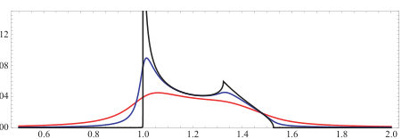
<figcaption class="paper-figure-caption"><b>Fig 1.</b> Figure 1: Spin absorption Ps ω, plotted in units of P0 (defined immediately below Eq. (12)) for m/M = 0.1. The black line represents the clean limit (τ = ∞) and shows the divergent threshold peak of Eq. (4) and the second, finite peak of Eq. (5). In the presence of a finite relaxation time τ, both peaks are rounded off, as illustrated by the blue line (ω−τ = 40) and the red line (ω−τ = 10).</figcaption>
</figure>
<figure class="paper-figure-card">
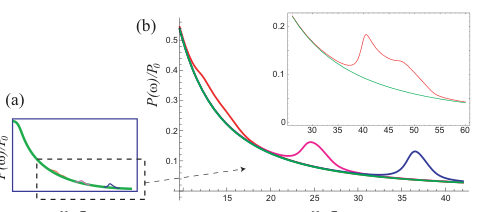
<figcaption class="paper-figure-caption"><b>Fig 2.</b> Figure 2: (a) Sketch of the full absorption P(ω) = Pe ω + Ps ω (not to scale), showing the Drude background (green line) and the EDSR peaks against its backdrop. (b) The full ab- sorption P(ω) obtained by numeric integration of Eq. (11). With increasing magnetic field (ω−= 2H⊥/ℏ) the EDSR peaks progressively rise above the ohmic background. Curves are shown for ω−τ = 12 (red line), ω−τ = 24 (magenta), and ω−τ = 36 (blue). Parameters are set to m/M = 0.1 and µτ/ℏ= 50. Inset: the two-peak structure emerges for ω−τ = 40 and µτ/ℏ= 150.</figcaption>
</figure>
<figure class="paper-figure-card">
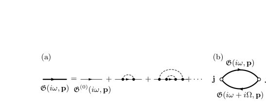
<figcaption class="paper-figure-caption"><b>Fig 3.</b> Figure 3: (a) The ‘rainbow’ diagrams, contributing to the disorder-averaged Green’s function G(iω, p), shown by the bold solid line. Thin solid line denotes the Green’s function G(0)(iω, p) in an impurity-free crystal: the inverse of the r.h.s. of Eq. (14) without the last term. Dashed line denotes the disorder correlator nu2 0δ(r −r′), see main text. (b) The po- larization ‘bubble’ diagram, corresponding to the Matsubara current-current correlator Παβ(iΩ, q = 0) in Eq. (15).</figcaption>
</figure>
</div>

<p><strong>Summary.</strong> This theoretical work predicts that altermagnetic conductors exhibit a unique Electric-Dipole Spin Resonance (EDSR) peak when subjected to an AC electric field perpendicular to the magnetization. This resonance occurs above a threshold frequency determined by the transverse magnetic field, offering a powerful method to experimentally distinguish altermagnetism from conventional antiferromagnetism.</p>
<p><strong>Why it may be interesting.</strong> The theoretical framework for EDSR provides a concrete, measurable spectroscopic signature related to magnetic order, which is highly relevant for understanding exotic electronic states in correlated materials.</p>
<details>
<summary>Detailed structure</summary>
<p><strong>Main problem.</strong> The paper aims to predict and provide a diagnostic signature for Electric-Dipole Spin Resonance (EDSR) in altermagnetic and antiferromagnetic conductors, allowing differentiation from other magnetic orders.</p>
<p><strong>Main result.</strong> EDSR manifests as a distinct spin resonance peak above a lower threshold frequency $\omega_- = 2H_\perp/\hbar$, which can serve as a unique diagnostic tool for altermagnetism.</p>
<p><strong>Method.</strong> The analysis uses a combination of kinetic equation treatments and diagrammatic calculations within the Matsubara formalism to derive the spin polarization and absorption rate.</p>
<p><strong>Model / system.</strong> The system involves altermagnetic and antiferromagnetic conductors, modeled using a low-energy Hamiltonian incorporating spontaneous spin splitting ($\Delta_p$) and an external transverse magnetic field ($\mathbf{H}_\perp$).</p>
<p><strong>Key observables.</strong> The primary observable is the EDSR absorption rate ($P_{s\omega}$), which is compared against the background ohmic absorption ($P_{e\omega}$).</p>
<p><strong>Important parameters / regimes.</strong> Key parameters include the transverse magnetic field $H_\perp$, the ratio $m/M$ characterizing spin splitting, and the clean limit condition $k_F l \approx 2\mu	au \gtrsim 300$.</p>
<p><strong>Assumptions / limitations.</strong> The analysis relies on the relaxation-time approximation for the spin polarization and assumes that vertex corrections vanish for $\delta$-correlated disorder.</p>
<p><strong>Figures summary.</strong> Figure 1 illustrates the theoretical EDSR peak shape (with and without finite scattering time $    au$) compared to the ohmic background. Figure 2 shows the evolution of the total absorption $P(\omega)$ with increasing magnetic field, and Figure 3 details the diagrammatic calculation framework.</p>
<p><strong>Paper structure.</strong> The paper establishes the physical model and Hamiltonian, derives the EDSR signal using kinetic equations and diagrammatic methods, predicts the characteristic frequency thresholds ($\omega_-$), and discusses the experimental conditions required for clear observation.</p>
</details>
<details>
<summary>Abstract</summary>
<p>We predict electric-dipole spin resonance (EDSR) in altermagnetic conductors: in a magnetic field ${\mathbf H}_\perp$, perpendicular to the magnetization axis, an AC electric field will induce a \textit{spin} resonance peak above the lower threshold frequency $ω_- = 2H_\perp$. In sufficiently clean samples, this peak shall be clearly visible on the background of ohmic absorption. EDSR can thus serve as a diagnostic of altermagnetism in conducting materials and as a means to distinguish it from higher-symmetry antiferromagnetic order.</p>
</details>
<p><sub><a href="#top">↑ back to top</a></sub></p>

<p><a id="paper-2608.25953"></a></p>
<h3 id="position-and-momentum-space-quantum-information-measures-of-the-double-morse-oscillator"><a href="http://arxiv.org/abs/2608.25953v1">Position- and Momentum-Space Quantum Information Measures of the Double-Morse Oscillator</a></h3>
<p><strong>Authors:</strong> Firoz Chogle, Ernesto Damiani, Berihu Teklu<br>
<strong>Type:</strong> theory · <strong>Category:</strong> other · <strong>PDF:</strong> <a href="https://arxiv.org/pdf/2608.25953v1">https://arxiv.org/pdf/2608.25953v1</a><br>
<strong>Analysis basis:</strong> full PDF text, analyzed in chunks
<strong>Topic relevance:</strong> <code>analog quantum simulation</code> <strong>3/5</strong> · <code>quantum measurements</code> <strong>1/5</strong></p>
<div class="figure-strip-hint">↔ Scroll figures horizontally</div>
<div class="paper-figures-scroll">
<figure class="paper-figure-card">
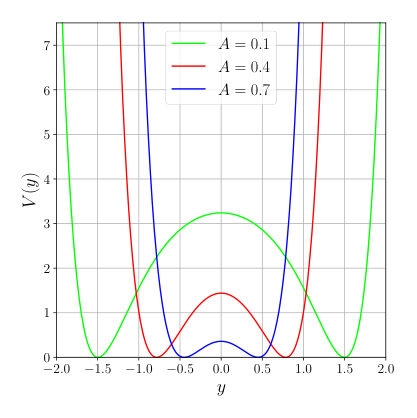
<figcaption class="paper-figure-caption"><b>Fig 1.</b> FIG. 1. Double Morse potential for A = 0.1, 0.4, 0.7 and µ = 2.</figcaption>
</figure>
<figure class="paper-figure-card">

<figcaption class="paper-figure-caption"><b>Fig 2.</b> Figure 1 shows the plot of the double Morse potential in dimensionless units, i.e., V (y) = µ2(A cosh(2y) −1)2. The influence of the well’s structure is governed by A. For small values of A, the potential shows two distinct wells and as A →1−, the two wells merge into one.</figcaption>
</figure>
<figure class="paper-figure-card">

<figcaption class="paper-figure-caption"><b>Fig 3.</b> FIG. 2. The profile of ground state (top) and excited state (bottom) position wavefunctions for parameter value A = 0.1, 0.4 and 0.7.</figcaption>
</figure>
<figure class="paper-figure-card">
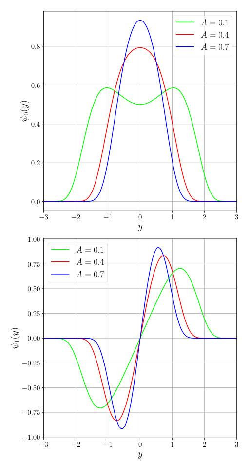
<figcaption class="paper-figure-caption"><b>Fig 4.</b> Figure 3 shows the variation of the ground- and excited-state energies as functions of A. When A →1−,</figcaption>
</figure>
<figure class="paper-figure-card">
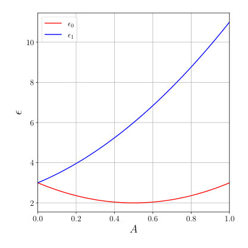
<figcaption class="paper-figure-caption"><b>Fig 5.</b> FIG. 3. The energy of ground and excited state as a function of A.</figcaption>
</figure>
</div>

<p><strong>Summary.</strong> This theoretical study analyzes the quantum information properties of a particle in the double-Morse potential by calculating metrics like entropy and Fisher information. The research tracks how these measures change as the potential transitions from two separated wells to a single merged well. It demonstrates that the complexity of the position distribution and the uncertainty in the momentum distribution exhibit complementary behaviors across this physical crossover.</p>
<p><strong>Why it may be interesting.</strong> This work provides a quantitative link between the geometry of a confining potential (double-well structure) and the resulting quantum uncertainty and complexity, which is highly relevant for understanding quantum state preparation and measurement in cold atom or superconducting circuit platforms.</p>
<details>
<summary>Detailed structure</summary>
<p><strong>Main problem.</strong> The paper investigates how quantum information measures characterize the particle confinement within the double-Morse potential in both position and momentum spaces.</p>
<p><strong>Main result.</strong> The position distribution shows increased structural complexity when the double-well character is strong, while the momentum distribution exhibits a complementary trend. The Fisher-Shannon product approaches the Gaussian reference value as the wells merge.</p>
<p><strong>Method.</strong> The analysis employs various information-theoretic measures—including Shannon entropy, Onicescu energy, and Fisher information—calculated for the first two bound states using quasi-exactly solvable analytical expressions.</p>
<p><strong>Model / system.</strong> The system is the double-Morse oscillator, governed by a potential $V_{DM} = D(A \cosh(\alpha x) - 1)^2$. This model is relevant for systems like ultracold atoms or semiconductor quantum wells.</p>
<p><strong>Key observables.</strong> Shannon entropy ($S_
ho, S_\gamma$), Onicescu energy ($O_
ho, O_\gamma$), Fisher information ($I_
ho, I_\gamma$), statistical complexity ($CGL$), and the Fisher-Shannon product ($P$).</p>
<p><strong>Important parameters / regimes.</strong> The dimensionless shape parameter $A$ controls the crossover from a double-well to a single-well profile, with the analysis focusing on $A \in (0, 1)$.</p>
<p><strong>Assumptions / limitations.</strong> The analysis is limited to the ground and first excited states due to the quasi-exactly solvable sector used, and the results are interpreted diagnostically rather than as a full device-specific estimation protocol.</p>
<p><strong>Figures summary.</strong> Figures illustrate the potential $V(y)$ vs. $A$, wavefunctions ($\psi_0, \psi_1$) vs. $A$, energy levels ($\epsilon_0, \epsilon_1$) vs. $A$, and the evolution of various information measures ($S_
ho, S_\gamma, O, P, CGL$) as $A$ changes.</p>
<p><strong>Paper structure.</strong> The paper introduces the double-Morse potential and its quasi-exact solvability. It then systematically calculates and analyzes several quantum information measures (Shannon, Onicescu, Fisher, etc.) as a function of the parameter $A$, detailing the physical interpretation of the trends observed in the position and momentum domains.</p>
</details>
<details>
<summary>Abstract</summary>
<p>We investigate the quantum-information properties of a particle confined by the double Morse potential in position and momentum spaces. The quasi-exact solvability of the model gives analytical expressions for the first two bound states, allowing the corresponding probability densities to be analyzed directly. Shannon entropy, Onicescu energy, Fisher information, statistical complexity, and Fisher-Shannon products are evaluated as functions of the parameter $A$, which controls the transition from a well-separated double well to a merged single-well profile. The position distribution is more delocalized and structurally complex when the double-well character is pronounced, whereas the momentum distribution exhibits the complementary trend. As the wells merge, the ground-state Fisher--Shannon product approaches its Gaussian reference value, whereas the excited state retains stronger non-Gaussian structure.</p>
</details>
<p><sub><a href="#top">↑ back to top</a></sub></p>

<p><a id="paper-2608.25027"></a></p>
<h3 id="real-time-decoder-for-a-megaquop-quantum-computer-using-a-single-cpu"><a href="http://arxiv.org/abs/2608.25027v1">Real-time decoder for a MegaQuOp quantum computer using a single CPU</a></h3>
<p><strong>Authors:</strong> Min Ye, Andrii Maksymov, Nicolas Delfosse<br>
<strong>Type:</strong> theory · <strong>Category:</strong> quantum information and computing · <strong>PDF:</strong> <a href="https://arxiv.org/pdf/2608.25027v1">https://arxiv.org/pdf/2608.25027v1</a><br>
<strong>Analysis basis:</strong> full PDF text, analyzed in chunks
<strong>Topic relevance:</strong> <code>QC/QI experiment</code> <strong>3/5</strong> · <code>quantum measurements</code> <strong>1/5</strong></p>
<div class="figure-strip-hint">↔ Scroll figures horizontally</div>
<div class="paper-figures-scroll">
<figure class="paper-figure-card">
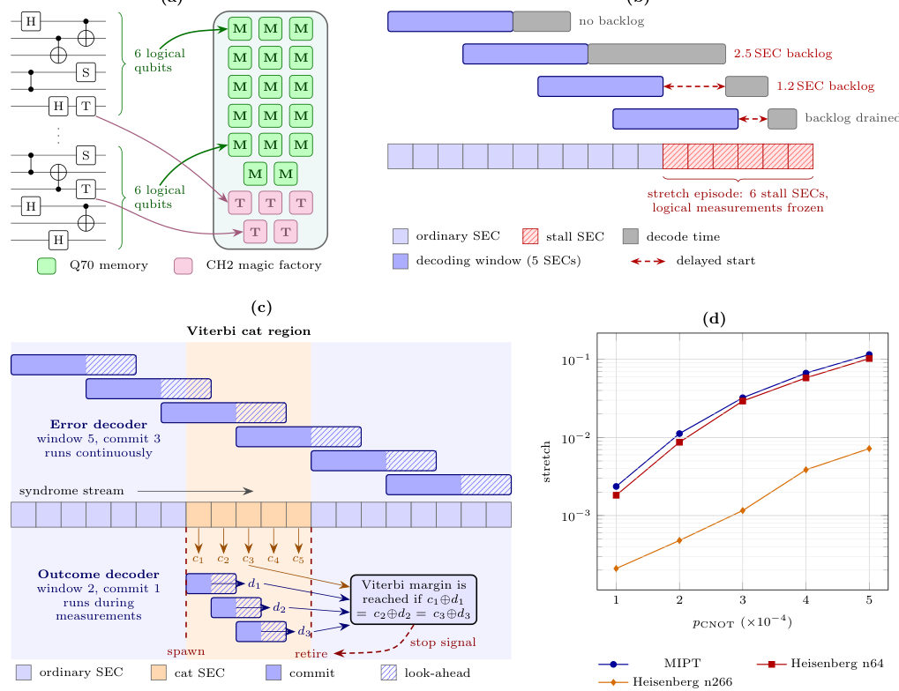
<figcaption class="paper-figure-caption"><b>Fig 1.</b> FIG. 1. (a) Distributing a compiled Clifford + T circuit onto a WCA instance. Each memory block (M) is encoded by the Q70 code and holds 6 logical qubits; each T gate consumes a magic state from a CH2 factory (T). Both Q70 code and CH2 factory were introduced in [35]. (b) Anatomy of a stretch episode. The decoding time budget per window is 3 SECs. The second window runs 2.5 SECs over budget, so the machine inserts stall SECs until the backlog drains (2.5 →1.2 →0). The inserted stall SECs form one stretch episode. (c) Two decoders on one block’s syndrome stream. The error decoder runs continuously and produces the Pauli-frame corrections. A cat SEC is a cat-based measurement followed by an...</figcaption>
</figure>
</div>

<p><strong>Summary.</strong> This paper presents a complete, real-time decoding stack for fault-tolerant quantum computation targeting MegaQuOp scale devices. By implementing a dual-decoder system on a single CPU, the authors successfully demonstrated that the decoding overhead remains negligible even for circuits involving millions of gates and hundreds of qubits. This work is crucial for realizing large-scale, practical quantum computation.</p>
<p><strong>Why it may be interesting.</strong> The work directly addresses the engineering bottleneck of fault-tolerant quantum computation by providing a concrete, high-performance decoding pipeline runnable on classical hardware.</p>
<details>
<summary>Detailed structure</summary>
<p><strong>Main problem.</strong> Developing a decoding system capable of real-time error correction for 'MegaQuOp' quantum computers, which execute millions of gates on hundreds of logical qubits.</p>
<p><strong>Main result.</strong> The authors demonstrated real-time decoding at MegaQuOp scale on a single conventional CPU, showing decoding delays of less than 0.3% at $p_{\mathrm{CNOT}}=10^{-4}$.</p>
<p><strong>Method.</strong> They implemented an end-to-end real-time decoding stack utilizing a dual sliding-window decoder (error and outcome decoders) running on a single CPU.</p>
<p><strong>Model / system.</strong> The system is designed for a universal fault-tolerant trapped-ion quantum computer architecture, benchmarked on circuits simulating Heisenberg models and Measurement-Induced Phase Transitions (MIPT).</p>
<p><strong>Key observables.</strong> Decoding delay (stretch) relative to computation time, total number of T gates, and total logical measurements.</p>
<p><strong>Important parameters / regimes.</strong> Logical qubit count (up to 408), number of T gates (up to $10^6$), and physical error rates ($p_{\mathrm{CNOT}}=10^{-4}$ to $5	imes 10^{-4}$).</p>
<p><strong>Assumptions / limitations.</strong> The architecture relies on the 'walking-cat architecture' (WCA), which simplifies decoding by keeping logical computation structure regular and avoiding block merging.</p>
<p><strong>Figures summary.</strong> Figures illustrate the circuit mapping onto the WCA, the dual-decoder structure (continuous error vs. measurement outcome decoder), and plots showing the decoding stretch versus $p_{\mathrm{CNOT}}$ for various benchmarks.</p>
<p><strong>Paper structure.</strong> The paper details the necessity of real-time decoding for large-scale quantum computation, presents the dual-decoder methodology optimized for the WCA, benchmarks this stack on complex circuits (MIPT, Heisenberg), and quantifies the resulting low decoding overhead.</p>
</details>
<details>
<summary>Abstract</summary>
<p>As quantum computers advance toward the regime of MegaQuOp machines executing millions of gates, a decoding system capable of real-time error correction in such a device will be crucial. Recent efforts have been focused on decoding an error-corrected memory or a small number of logical operations. Here we demonstrate an end-to-end real-time decoding stack for a universal fault-tolerant trapped-ion quantum computer architecture capable of decoding real workloads with millions of logical gates over hundreds of logical qubits. The complete pipeline, including on the fly detector error model generation, decoding of all logical qubits, logical operations, and magic-state factories, runs on a single CPU. We benchmark the decoder on practically relevant quantum applications spanning up to 408 logical qubits, and up to one million $T$ gates. Assuming a trapped-ion architecture with 1 to 5 ms cycle time, the decoding delay stretches the computation by less than $0.3\%$ at $p_{\mathrm{CNOT}}=10^{-4}$ and less than $12\%$ at $p_{\mathrm{CNOT}}=5\times 10^{-4}$ for all workloads studied. These results demonstrate real-time decoding at MegaQuOp scale on a single conventional CPU.</p>
</details>
<p><sub><a href="#top">↑ back to top</a></sub></p>

<p><a id="paper-2608.25896"></a></p>
<h3 id="distributed-trotterization-with-optimal-time-scaling-entanglement-cost"><a href="http://arxiv.org/abs/2608.25896v1">Distributed Trotterization with optimal time-scaling entanglement cost</a></h3>
<p><strong>Authors:</strong> Tianfeng Feng, Jinzhao Sun, Yunlong Xiao, Qi Zhao<br>
<strong>Type:</strong> theory · <strong>Category:</strong> quantum information and computing · <strong>PDF:</strong> <a href="https://arxiv.org/pdf/2608.25896v1">https://arxiv.org/pdf/2608.25896v1</a><br>
<strong>Analysis basis:</strong> full PDF text, analyzed in chunks
<strong>Topic relevance:</strong> <code>analog quantum simulation</code> <strong>3/5</strong></p>
<div class="figure-strip-hint">↔ Scroll figures horizontally</div>
<div class="paper-figures-scroll">
<figure class="paper-figure-card">
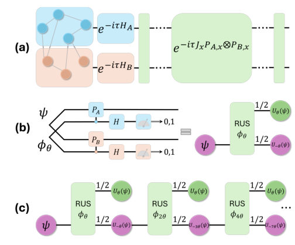
<figcaption class="paper-figure-caption"><b>Fig 1.</b> FIG. 1. Distributed Trotterization. (a) Schematic of the Distributed Quantum Simulation. A many-body Hamiltonian distributed across spatially separated quantum processors. The system is partitioned into subsystems A and B, whose local dynamics are generated by HA and HB, respectively, while the interaction term HAB is implemented through en- tangling evolutions. (b) Repeat-Until-Success Protocol. The ancillary state ϕθ, together with LOCC, implements the tar- get evolution Uθ probabilistically: the even- and odd-parity outcomes occur with equal probability, yielding Uθ(ψ) and U−θ(ψ), respectively. (c) Adaptive Quantum Simulation. If a round returns the odd-parity outcome, the protocol is...</figcaption>
</figure>
<figure class="paper-figure-card">
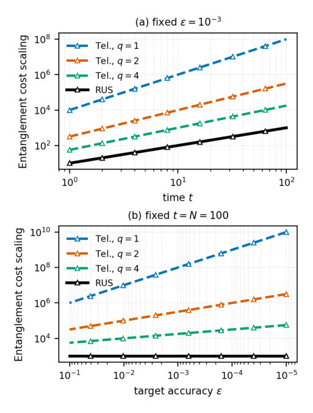
<figcaption class="paper-figure-caption"><b>Fig 2.</b> FIG. 2. Upper-bound scaling of the entanglement cost for distributed Trotterization. The plotted quantity is an upper-bound scaling of entanglement cost for simulating a 2-dimensional lattice with N = 100. Fixed prefactors, in- cluding νq, the commutator factor αq, and other constants independent of the plotted variables, are omitted. (a) At fixed target error ϵ, the cost of standard teleportation-based implementation grows superlinearly with evolution time t, whereas the RUS cost remains linear in t. (b) At fixed t = N = 100, the cost of standard teleportation-based imple- mentation increases as ϵ−1/q with increasing simulation ac- curacy, whereas the RUS cost is independent of ϵ. Dashed...</figcaption>
</figure>
</div>

<p><strong>Summary.</strong> This paper introduces an adaptive Repeat-Until-Success (RUS) protocol to simulate quantum dynamics across multiple processors. It demonstrates that this protocol allows the total entanglement cost to scale only linearly with simulation time, independent of the required accuracy. This linear scaling is proven to be optimal, establishing a resource-efficient foundation for high-fidelity quantum simulation on distributed hardware.</p>
<p><strong>Why it may be interesting.</strong> This work directly tackles the resource scaling bottleneck in large-scale quantum simulation, providing a theoretically optimal resource estimate for networked quantum processors.</p>
<details>
<summary>Detailed structure</summary>
<p><strong>Main problem.</strong> The paper addresses the resource-efficient simulation of many-body dynamics on distributed quantum processors, specifically minimizing the entanglement cost associated with nonlocal operations.</p>
<p><strong>Main result.</strong> By using a Repeat-Until-Success (RUS) protocol, the total entanglement cost for high-accuracy simulation scales only linearly with the evolution time ($O(t)$), which is proven to be optimal.</p>
<p><strong>Method.</strong> The authors compare the entanglement cost scaling of the proposed adaptive RUS protocol against conventional teleportation methods within the framework of product formula Trotterization.</p>
<p><strong>Model / system.</strong> The model is the distributed quantum simulation of a many-body system governed by a Hamiltonian $H = H_A + H_B + H_{AB}$, where interactions occur between spatially separated subsystems A and B.</p>
<p><strong>Key observables.</strong> Entanglement Cost (measured in ebits), Total Entanglement Cost scaling ($O(t)$ vs. superlinear/divergent), and Simulation Error ($\epsilon$).</p>
<p><strong>Important parameters / regimes.</strong> Evolution Time ($t$), Target Error ($\epsilon$), Trotterization Order ($q$), and Interaction Strengths ($J_x$).</p>
<p><strong>Assumptions / limitations.</strong> The analysis assumes the applicability of the RUS protocol and relies on matching lower bounds from quantum communication complexity to establish optimality.</p>
<p><strong>Figures summary.</strong> Figures schematically illustrate the distributed simulation setup, the RUS protocol mechanism, and the comparative scaling of entanglement costs showing $C_{	ext{RUS}}$ remaining linear while $C_{	ext{TEL}}$ diverges as accuracy increases.</p>
<p><strong>Paper structure.</strong> The paper first establishes the problem of resource-intensive nonlocal gates in distributed simulation. It then introduces and analyzes the RUS protocol, deriving its expected entanglement cost. Finally, it compares this cost scaling against standard teleportation methods, proving the linear scaling is optimal.</p>
</details>
<details>
<summary>Abstract</summary>
<p>Distributed architectures extend quantum simulation of many-body dynamics beyond the reach of any single processor, with shared entanglement mediating interactions between spatially separated devices. Conventional implementations rely on quantum teleportation, which provides a universal realization of nonlocal operations but incurs a fixed entanglement cost per gate, irrespective of its strength. This becomes increasingly inefficient in product formula simulation, where higher accuracy requires ever more numerous, yet progressively weaker, nonlocal rotations, causing the entanglement cost to diverge in the high-accuracy limit. Here we introduce a simple repeat-until-success protocol that makes entanglement consumption adaptive to interaction strength. Incorporating this primitive into distributed product formulas yields a total entanglement cost that scales linearly with evolution time and remains independent of Trotter error. A matching lower bound from quantum communication complexity proves this time scaling to be optimal, establishing a resource-efficient foundation for high-accuracy quantum simulation across networked processors.</p>
</details>
<p><sub><a href="#top">↑ back to top</a></sub></p>

<p><a id="paper-2608.26045"></a></p>
<h3 id="electrical-manipulation-of-oxygen-stoichiometry-in-multiterminal-ybamath376mathcumath377mathomath378math-junctions"><a href="http://arxiv.org/abs/2608.26045v1">Electrical manipulation of oxygen stoichiometry in multiterminal YBa$_2$Cu$_3$O$_{7-δ}$ junctions</a></h3>
<p><strong>Authors:</strong> Daniel Stoffels, Caio C. Quaglio-Gomes, Nicolas Lejeune, Emile Fourneau, Pedro Schio, Huidong Li, Lourdes Fabrega, Anna Palau, Maycon Motta, Alejandro V. Silhanek<br>
<strong>Type:</strong> both · <strong>Category:</strong> strongly correlated electrons · <strong>PDF:</strong> <a href="https://arxiv.org/pdf/2608.26045v1">https://arxiv.org/pdf/2608.26045v1</a><br>
<strong>Analysis basis:</strong> full PDF text, analyzed in chunks
<strong>Topic relevance:</strong> <code>quantum measurements</code> <strong>3/5</strong></p>
<div class="figure-strip-hint">↔ Scroll figures horizontally</div>
<div class="paper-figures-scroll">
<figure class="paper-figure-card">
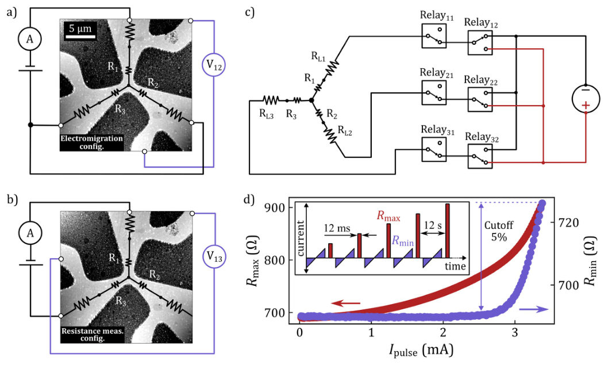
<figcaption class="paper-figure-caption"><b>Fig 1.</b> Figure 1: Methods: (a) AFM image overlaid with the schematic electrical connections for EM applied to terminal 1 with negative polarity. (b) Same AFM image with the electrical connections for resistance measurement of R13 = R1 + R3 between terminals 1 and 3. (c) Equivalent circuit and relay wiring used to automate configuration switching during electrical measurements. Each terminal is modeled by a resistor Ri, while the additional resistor RLi represents the series resistance of the remaining material outside the region between the voltage probes, i.e., the ohmic contribution from areas farther from the central node. (d) Experimental electrical response during a representative EM cycle....</figcaption>
</figure>
<figure class="paper-figure-card">
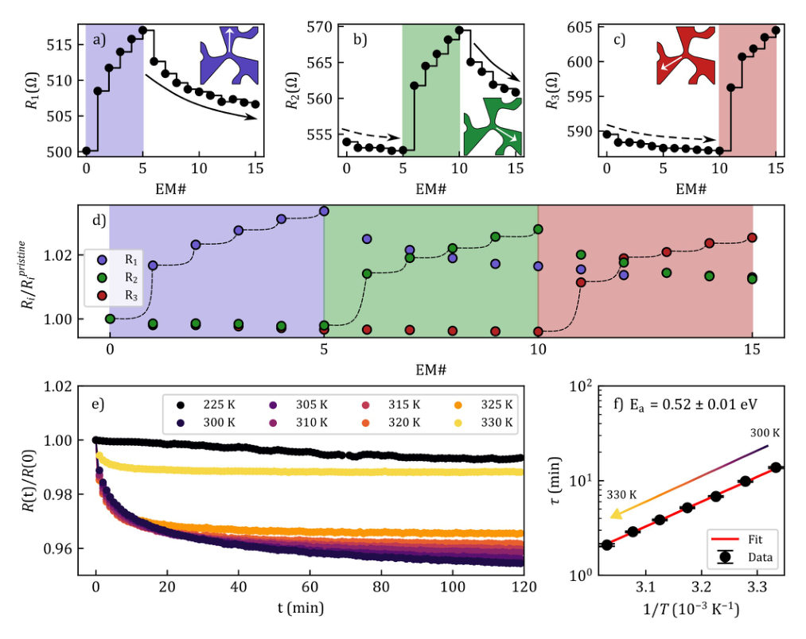
<figcaption class="paper-figure-caption"><b>Fig 2.</b> Figure 2: Results of 15 EM runs highlighting the method’s selectivity: During runs 1–5, terminal R1 was targeted; runs 6–10 targeted R2; and runs 11–15 targeted R3. Panels (a)–(c) show the evolution of the resistances of terminals R1, R2, and R3, respectively, measured after each EM run. Panel (d) displays the resistances normalized to their initial values. Panel (e) presents the resistance relaxation as a function of time following eight 5% EM runs performed at different temperatures and monitored for 2 h. Stretched-exponential fits yielded temperature-dependent relaxation time constants with an average stretching exponent of β = 0.455 ± 0.004; almost no relaxation was observed at 225 K...</figcaption>
</figure>
<figure class="paper-figure-card">
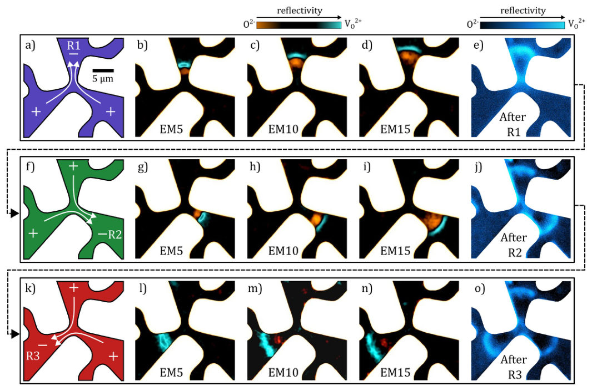
<figcaption class="paper-figure-caption"><b>Fig 3.</b> Figure 3: Results obtained from optical microscopy collected during 15 successive EM runs performed on each terminal of the same device: Panels (a-e), (f-j), and (k-o) correspond to EM of terminals R1, R2, and R3, respectively. In each group, the first panel illustrates the electrical configuration used to selectively drive EM, while the following three panels show differential optical micrographs acquired after 5, 10, and 15 runs. In these images, the substrate appears in white, the YBCO film in black, while oxygen-depleted regions (with higher concentration of oxygen vacancies, VO2+), characterized by increased optical reflectivity, are highlighted in light blue. The orange features arise...</figcaption>
</figure>
<figure class="paper-figure-card">
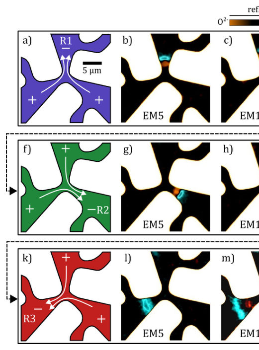
<figcaption class="paper-figure-caption"><b>Fig 4.</b> Figure 4(b) shows the KPFM map of a second device af- ter five successive EM cycles under positive polarity per- formed for each terminal. In contrast to the negative- polarity case (panel (a)), the surface potential distribu- tion indicates vacancy accumulation at the central node. In this case, the maximum work function difference is ap- proximately -0.2 eV, smaller than that observed for neg- ative polarity, which is attributed to the smaller accumu- lated EM dose resulting from the lower number of pulsing cycles. Additional experimental results and finite-element simulations for the positive-polarity case are provided in the Supplementary Material S2. Together, the two KPFM maps provide...</figcaption>
</figure>
<figure class="paper-figure-card">
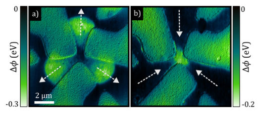
<figcaption class="paper-figure-caption"><b>Fig 5.</b> Figure 4: Kelvin Probe Force Microscopy: (a) KPFM map of the YBCO device after EM under negative polarity (same device as Fig. 3), showing work function variations (∆ϕ) associated with oxygen redistribution. (b) KPFM map of a second device after five EM cycles under positive polarity applied to each terminal. White arrows indicate the inferred direction of vacancy migration. The zero references correspond to pristine regions far from the center of the devices.</figcaption>
</figure>
</div>

<p><strong>Summary.</strong> This work demonstrates a novel, post-fabrication method to locally tune the superconducting properties of YBCO junctions by electrically driving oxygen vacancy migration. By applying controlled currents, researchers can direct oxygen depletion fronts, which is confirmed by changes in resistance, $T_c$, and crystal structure. This establishes a route for engineering superconducting weak links.</p>
<p><strong>Why it may be interesting.</strong> The ability to induce controlled, non-equilibrium changes in the electronic structure of a high-Tc superconductor via ionic motion provides a powerful, tunable handle on correlated electron behavior, relevant to understanding charge/orbital ordering.</p>
<details>
<summary>Detailed structure</summary>
<p><strong>Main problem.</strong> The study addresses the challenge of locally controlling the electronic properties of complex oxide superconductors by selectively manipulating oxygen stoichiometry in multi-terminal junctions.</p>
<p><strong>Main result.</strong> The authors successfully demonstrated that oxygen vacancy migration can be electrically controlled in a Y-shaped YBCO junction, leading to measurable changes in resistance, superconducting transition temperature, and lattice structure.</p>
<p><strong>Method.</strong> The research combines electromigration (EM) experiments with advanced characterization techniques like KPFM, SLM, and nanoprobe XRD, complemented by finite-element modeling.</p>
<p><strong>Model / system.</strong> The physical system is a YBa2Cu3O7-delta superconductor patterned into a three-terminal junction. The underlying physics involves oxygen vacancy diffusion driven by applied current, modeled by coupled diffusion and electromigration equations.</p>
<p><strong>Key observables.</strong> Resistance ($R$), superconducting critical temperature ($T_c$) contrast, work-function changes (KPFM), $c$-axis lattice parameter (XRD), and optical reflectivity changes.</p>
<p><strong>Important parameters / regimes.</strong> Current polarity (determining front direction), applied current density, and relaxation time constants ($   au$).</p>
<p><strong>Assumptions / limitations.</strong> The relaxation process is assumed to be a thermally activated diffusion process, and the correlation between $T_c$ contrast and oxygen content is assumed to be quantitative.</p>
<p><strong>Figures summary.</strong> Figures illustrate the electrical response during EM cycles, visualization of oxygen-vacancy fronts via optical contrast, and quantitative structural changes via XRD lattice parameter modulation.</p>
<p><strong>Paper structure.</strong> The paper establishes the problem of local stoichiometry control, details the multi-modal experimental setup (electrical, optical, structural), presents results showing current-direction dependent vacancy movement, and validates these findings using continuum modeling.</p>
</details>
<details>
<summary>Abstract</summary>
<p>Local manipulation of oxygen stoichiometry offers a route to control the electronic properties of complex oxides, yet the selective modification of individual current-carrying branches through oxygen redistribution remains unexplored in multiterminal high-temperature superconducting junctions. In a YBa$_2$Cu$_3$O$_{7-δ}$ Y-shaped three-terminal device, we demonstrate the possibility to electrically control oxygen vacancy migration on a hand-picked terminal while largely preserving the other two. Oxygen-depleted propagating fronts are directly visualized by the resulting change in optical reflectivity and they are linked to the evolution of the electrical response. The process is highly directional and determined by the polarity of the applied current, allowing for the creation of either a converging or a diverging propagating front from the central node of the Y-shaped device. The associated changes in resistance exhibit relaxation on a timescale of minutes, driven by the vacancy concentration gradient. Effects of oxygen migration are also mapped by Kelvin Probe Force Microscopy and Scanning Laser Microscopy, which probe work-function changes and spatially resolved variations in the superconducting transition, respectively. Notably, the Tc contrast revealed by the latter provides a quantitative handle on the underlying oxygen content, enabling direct visualization of oxygen redistribution. Finite-element modeling and nanoprobe X-ray diffraction qualitatively reproduce the observed vacancy redistribution. These results establish a post-fabrication route to locally tune properties of superconducting multiterminal devices such as nanocryotrons, yTron, and tunable weak links.</p>
</details>
<p><sub><a href="#top">↑ back to top</a></sub></p>

<p><a id="paper-2608.25950"></a></p>
<h3 id="entirely-nonlocal-quantum-magic-without-entanglement"><a href="http://arxiv.org/abs/2608.25950v1">Entirely nonlocal quantum magic without entanglement</a></h3>
<p><strong>Authors:</strong> Fuchuan Wei, Ruixia Wang, Yujia Zhang, Huihui Li, Junfeng Li, Fei Yan, Zi-Wen Liu<br>
<strong>Type:</strong> both · <strong>Category:</strong> quantum information and computing · <strong>PDF:</strong> <a href="https://arxiv.org/pdf/2608.25950v1">https://arxiv.org/pdf/2608.25950v1</a><br>
<strong>Analysis basis:</strong> full PDF text, analyzed in chunks
<strong>Topic relevance:</strong> <code>QC/QI experiment</code> <strong>3/5</strong></p>
<div class="figure-strip-hint">↔ Scroll figures horizontally</div>
<div class="paper-figures-scroll">
<figure class="paper-figure-card">
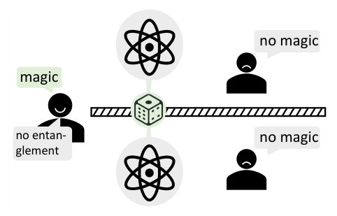
<figcaption class="paper-figure-caption"><b>Fig 1.</b> FIG. 1. Entirely nonlocal magic without entanglement. In a separable bipartite state or channel, magic can be encoded entirely in correlations while both local reductions remain magic-free. Cooperation using stabilizer operations and clas- sical communication recovers the hidden resource.</figcaption>
</figure>
<figure class="paper-figure-card">
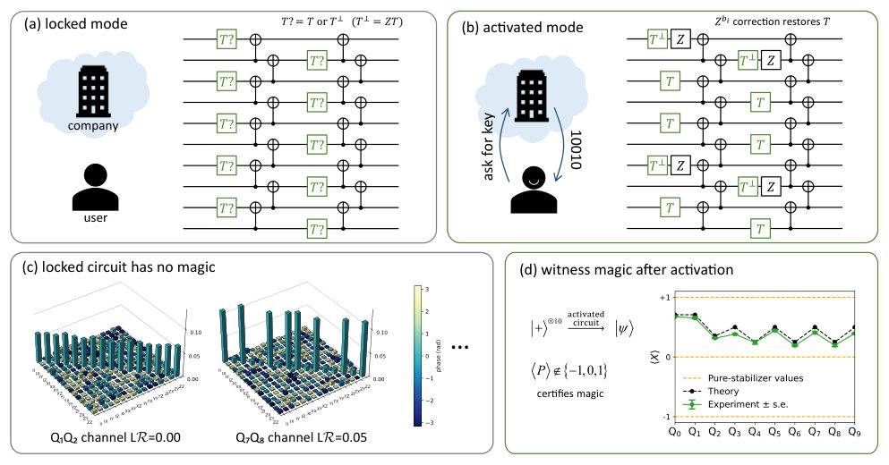
<figcaption class="paper-figure-caption"><b>Fig 2.</b> FIG. 2. Magic activation key. A classical secret key switches a Clifford+T processor between a magic-free locked mode and n activated mode that restores the intended computation, without quantum communication or shared entanglement. (a) In the locked mode, each protected T gate use implements either T or T ⊥:= ZT according to the key unknown to the user. Without the key, hidden randomization (possibly correlated across gates) makes user’s effective protected dynamics a stabilizer channel. (b) Once the key bit bi is revealed, the user applies the Pauli correction Zbi after the corresponding protected gate, restoring the intended T operation. The figure shows a two-gate mask: one key bit...</figcaption>
</figure>
<figure class="paper-figure-card">
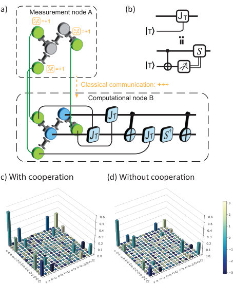
<figcaption class="paper-figure-caption"><b>Fig 3.</b> FIG. 3. Magic secret sharing with two-way T-type ENM links. (a) Three separable ENM links (green) connect mea- surement node A to computational node B. Measuring the link qubits at A in the X basis and postselecting on X = +1 for all three, with the outcomes communicated to B, localizes three |T⟩states at B. These states are consumed to imple- ment CS on two target qubits at B. (b) The standard T-state injection gadget JT . (c,d) Experimental process tomography yields reconstructed Choi-state log-RoM values of 0.83 with cooperation and 0.18 without cooperation, which are close to ideal values.</figcaption>
</figure>
<figure class="paper-figure-card">
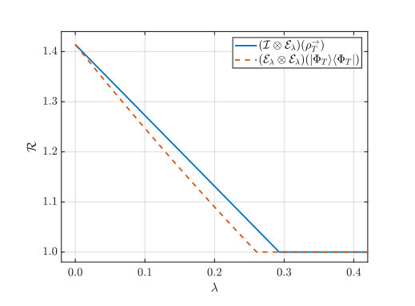
<figcaption class="paper-figure-caption"><b>Fig 4.</b> FIG. 4. Comparison of the RoM of (I ⊗Eλ)(ρ→ T ) and (Eλ ⊗Eλ)(|ΦT ⟩⟨ΦT |). The former is shown by the blue solid line and decays linearly until reaching the threshold 1 − 1 √</figcaption>
</figure>
<figure class="paper-figure-card">
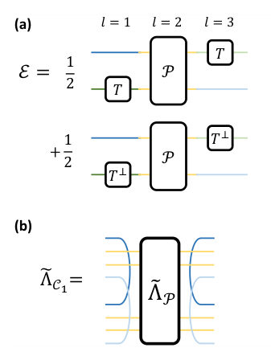
<figcaption class="paper-figure-caption"><b>Fig 5.</b> FIG. 5. Graphical proof of Proposition 12, for the case E = 1</figcaption>
</figure>
</div>

<p><strong>Summary.</strong> This paper introduces and experimentally verifies Entirely Nonlocal Magic (ENM), a quantum resource that carries magic only in correlations, not locally, and crucially, without entanglement. The authors develop protocols to use ENM for classical key-controlled activation of non-Clifford operations and for magic secret sharing. This establishes a new paradigm for controlling quantum computational power in distributed quantum systems.</p>
<p><strong>Why it may be interesting.</strong> It provides a novel mechanism to control quantum computational power (magic) using only classical control and separable resources, which is highly relevant for understanding resource management in distributed quantum computing architectures.</p>
<details>
<summary>Detailed structure</summary>
<p><strong>Main problem.</strong> The paper investigates Entirely Nonlocal Magic (ENM), a quantum resource where nonstabilizerness exists only in global correlations and not locally, and demonstrates that this magic can be controlled without relying on entanglement.</p>
<p><strong>Main result.</strong> They show that magic can be classically activated, localized, and secret-shared using separable ENM states, providing new resource-control primitives for distributed quantum computation.</p>
<p><strong>Method.</strong> The study involves systematic construction of separable ENM states and channels, followed by experimental demonstrations of activation key protocols and magic secret sharing on a superconducting quantum processor.</p>
<p><strong>Model / system.</strong> The work is demonstrated on a superconducting quantum processor, utilizing bipartite and multipartite separable quantum states ($
ho^{(n)}_\psi$, $
ho^{(n)}_T$) and channels.</p>
<p><strong>Key observables.</strong> Robustness of Magic (RoM), Choi-state log-RoM ($L_R$), and state/process fidelities.</p>
<p><strong>Important parameters / regimes.</strong> The analysis considers scaling with the number of qubits ($n$) and the parameter $\alpha$ in the Pauli-moment functional $M_\alpha$.</p>
<p><strong>Assumptions / limitations.</strong> The protocols rely fundamentally on the availability of local stabilizer processing and classical communication.</p>
<p><strong>Figures summary.</strong> Figures illustrate ENM in separable states/channels, the Magic Activation Key switching between locked/activated modes, and the implementation of Magic Secret Sharing.</p>
<p><strong>Paper structure.</strong> The paper first establishes the theoretical framework for ENM, then develops protocols for activation keys and secret sharing, and finally provides experimental demonstrations on superconducting hardware, supplemented by theoretical scaling analyses using Pauli moments.</p>
</details>
<details>
<summary>Abstract</summary>
<p>Nonstabilizerness, or magic, is an archetypal \emph{quantum} resource that is necessary for quantum computational advantage. Here we uncover a phenomenon seemingly at odds with the quantum nature of magic: entirely nonlocal magic (ENM)---magic present only in correlations and absent from each party's marginal---can live without entanglement. We systematically study this separation and show it is universal and operationally reversible: every magical state or channel can be encoded into and recovered from a separable ENM realization using only local stabilizer processing and classical communication. We leverage this mechanism to devise an activation key protocol in which a classical key controls access to non-Clifford operations. We further formulate magic secret sharing, in which computational power inaccessible to any party alone becomes accessible through cooperation. On a superconducting quantum processor, we experimentally demonstrate activation key and network computing primitives, together with separable ENM state preparation and extraction protocols. Together, our results establish that magic can be classically activated, localized, and secret-shared without entanglement, providing new resource-control primitives for distributed quantum computation.</p>
</details>
<p><sub><a href="#top">↑ back to top</a></sub></p>

<p><a id="paper-2608.26099"></a></p>
<h3 id="exact-analytical-spectrum-eigenstates-and-quantum-geometry-of-the-quarter-flux-harper-hofstadter-model"><a href="http://arxiv.org/abs/2608.26099v1">Exact analytical spectrum, eigenstates, and quantum geometry of the quarter-flux Harper-Hofstadter model</a></h3>
<p><strong>Authors:</strong> Isaac Tesfaye, André Eckardt<br>
<strong>Type:</strong> theory · <strong>Category:</strong> other · <strong>PDF:</strong> <a href="https://arxiv.org/pdf/2608.26099v1">https://arxiv.org/pdf/2608.26099v1</a><br>
<strong>Analysis basis:</strong> full PDF text, analyzed in chunks
<strong>Topic relevance:</strong> <code>analog quantum simulation</code> <strong>3/5</strong></p>
<div class="figure-strip-hint">↔ Scroll figures horizontally</div>
<div class="paper-figures-scroll">
<figure class="paper-figure-card">
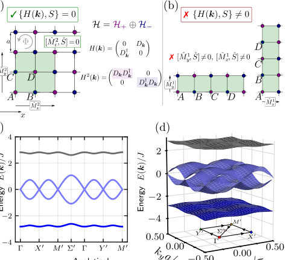
<figcaption class="paper-figure-caption"><b>Fig 1.</b> FIG. 1. Sublattice symmetry and analytical spectrum of the quarter-flux Harper-Hofstadter model. (a) Real space lat- tice of HH-model with a quarter flux Φ = π/2 per plaquette, the symmetric 2 × 2 MUC (green shaded area) with its four sublattice sites A, B, C, D. The sublattice symmetry ˆS = (−1)m+n|m, n⟩⟨m, n| corresponding to the bipartite checker- board pattern (purple/blue colored sites for the even/odd sub- lattice), commutes with the associated magnetic translation operators (MTOs) ˆ M 2 i of the MUC, [ ˆS, ˆ M 2 i ] = 0, and is pre- served in momentum space via S = diag(1, −1, −1, 1), and anti-commutes with the Bloch Hamiltonian (2), {H(k), S} = 0. (b): Same as (a) for the other two...</figcaption>
</figure>
<figure class="paper-figure-card">
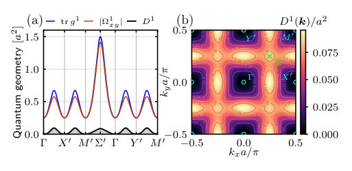
<figcaption class="paper-figure-caption"><b>Fig 2.</b> FIG. 2. Local trace-condition (ideal-band) defect D1(k) = tr g1(k) −|Ω1 xy(k)| ≥ 0 (9) of the quarter-flux Harper- Hofstadter ground band |Ψ−,1⟩obtained from the analytical Berry curvature (8) and the quantum metric (7). (a) D1(k) along the high-symmetry path Γ–X′–M ′–Σ′–Γ–Y ′–M ′ [as in Fig. 1], together with tr g1 (blue) and |Ω1 xy| (red) overlaid, which fluctuate across the FBZ, but coincide at the high- symmetry points (Γ, X′, Y ′, M ′ cyan circles in (b)), so the shaded gap D1 (black) stays small. (b) D1(k) depicted over the 2D FBZ. The defect is pointwise non-negative and van- ishes exactly at the cyan-colored high-symmetry points where the band is locally an ideal LLL while it peaks...</figcaption>
</figure>
</div>

<p><strong>Summary.</strong> This paper provides an exact analytical solution for the spectrum and quantum geometry of the quarter-flux Harper-Hofstadter model. By exploiting sublattice symmetry, the authors derive closed-form expressions for the energy bands and the full Quantum Geometric Tensor. The results confirm the model's topological nature, showing the lowest band is nearly an ideal Chern insulator, which is highly relevant for experimental realization using ultracold atoms.</p>
<p><strong>Why it may be interesting.</strong> The explicit analytical solution for the QGT and the quantification of topological stability defects provide powerful, exact benchmarks for understanding topological phases in lattice models relevant to AMO experiments.</p>
<details>
<summary>Detailed structure</summary>
<p><strong>Main problem.</strong> To derive exact analytical expressions for the spectrum, eigenstates, and quantum geometry of the quarter-flux Harper-Hofstadter model.</p>
<p><strong>Main result.</strong> The model is solved analytically by exploiting sublattice symmetry, revealing that the lowest band is nearly an ideal Chern band with a calculated Chern number of -1.</p>
<p><strong>Method.</strong> The analysis uses the sublattice symmetry to block-diagonalize the Bloch Hamiltonian, allowing for the analytical derivation of the spectrum via singular value decomposition and the calculation of the full Quantum Geometric Tensor (QGT).</p>
<p><strong>Model / system.</strong> The system is the Harper-Hofstadter model, describing charged particles on a 2D square lattice subjected to a uniform magnetic field at quarter flux ($\alpha=1/4$). The model is realized in platforms like ultracold atoms and superconducting circuits.</p>
<p><strong>Key observables.</strong> Full Quantum Geometric Tensor (QGT), Berry curvature, quantum metric, Chern numbers ($C_n$), and various integrated stability defects (e.g., $   ext{THH}$).</p>
<p><strong>Important parameters / regimes.</strong> Quarter flux ($\alpha=1/4$), lattice geometry (2D square lattice), and the magnetic field strength.</p>
<p><strong>Assumptions / limitations.</strong> The analytical solution hinges on the preservation of sublattice symmetry in the symmetric $2 	imes 2$ Magnetic Unit Cell (MUC) in quasimomentum space.</p>
<p><strong>Figures summary.</strong> Figures illustrate the energy spectrum along high-symmetry paths and across the full Brillouin zone, confirming the analytical results for the four bands.</p>
<p><strong>Paper structure.</strong> The paper first establishes the model and the symmetry enabling the analytical solution. It then derives the spectrum and eigenstates, followed by the calculation of the QGT. Finally, it evaluates global stability criteria for hosting Fractional Chern Insulators (FCIs).</p>
</details>
<details>
<summary>Abstract</summary>
<p>Quantum geometry has emerged as a guiding principle across atomic and condensed-matter physics, shaping the topological responses of Bloch bands and the stability of the correlated phases they host. Beyond two-band models, however, closed-form expressions for both the spectrum and the quantum geometry are rare. Here we provide such expressions for a paradigmatic four-band model that has recently been realized experimentally with ultracold atoms, photons and in superconducting circuits: the Harper-Hofstadter model at quarter flux, describing charged particles on a two-dimensional square lattice subjected to a uniform magnetic field. We achieve this by first showing that the model possesses a sublattice symmetry, which renders its Bloch Hamiltonian anti-block-diagonal allowing us to derive the spectrum and the eigenstates analytically. From that we also obtain closed-form expressions for the full quantum geometric tensor (QGT), including both the Berry curvature and the quantum metric, for all the bands of the model. For this purpose we first derive a general expression for the QGT for sublattice-symmetric systems in terms of contributions from the individual sublattice sectors. Finally, we evaluate fractional-Chern-insulator stability criteria analytically and quantify the lowest band of the quarter-flux Harper-Hofstadter model to be a nearly ideal Chern band.</p>
</details>
<p><sub><a href="#top">↑ back to top</a></sub></p>

<p><a id="paper-2608.25900"></a></p>
<h3 id="from-rings-to-resonance-an-inverse-method-links-biophotonic-structural-color-to-inverse-photonic-glasses"><a href="http://arxiv.org/abs/2608.25900v1">From rings to resonance: an inverse method links biophotonic structural color to inverse photonic glasses</a></h3>
<p><strong>Authors:</strong> Florin Hemmann, Matthias Saba, Ullrich Steiner, Mauro S. Ferreira, Felipe A. Pinheiro<br>
<strong>Type:</strong> theory · <strong>Category:</strong> disordered systems and neural networks · <strong>PDF:</strong> <a href="https://arxiv.org/pdf/2608.25900v1">https://arxiv.org/pdf/2608.25900v1</a><br>
<strong>Analysis basis:</strong> full PDF text, analyzed in chunks
<strong>Topic relevance:</strong> <code>interference shaping light</code> <strong>3/5</strong></p>
<div class="figure-strip-hint">↔ Scroll figures horizontally</div>
<div class="paper-figures-scroll">
<figure class="paper-figure-card">
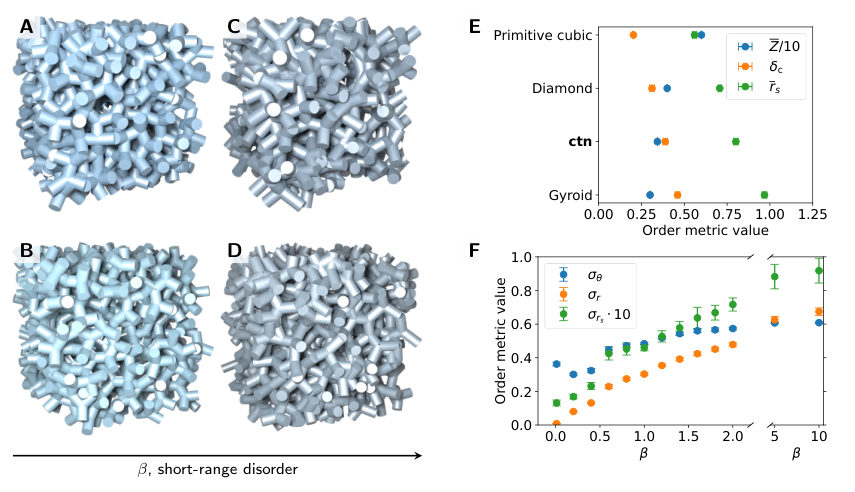
<figcaption class="paper-figure-caption"><b>Fig 1.</b> Figure 1: The effect of network type and the disorder parameter β on short-range order metrics and color appearance. (A,B) Diamond- and ctn-like networks generated at beta = 0.2. (C,D) Corresponding networks generated at beta = 0.8. Diamond-like networks have Z = 4, ctn-like networks Z = 3.4. The rendered colors in (A)-(D) correspond to the simulated optical response for an equilibrium bond length d = 160 nm. (E) An increase in mean coordination scales down the critical pore size δc and the mean ring radius rs for networks generated at β = 0.2. (F) As the network generation parameter β of diamond-like networks increases, the bond length standard deviation σr and the ring radius standard...</figcaption>
</figure>
<figure class="paper-figure-card">
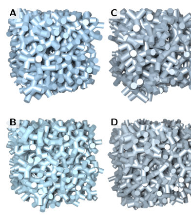
<figcaption class="paper-figure-caption"><b>Fig 2.</b> Figure 2A displays the average reflectance spectra of diamond-like networks with different β values. At low fre- quencies ν, the reflectance is weak because light averages over the network structure with an effective refractive in- dex only slightly above unity. The oscillations at ν ≲0.2 arise from Fabry-P´erot resonances of the finite-thickness slab. As the frequency enters the resonant regime at ν ≳0.2, the reflectance increases and peaks near ν ≈0.3. The peak broadens with increasing β, consistent with the enhanced bond-length and ring disorder shown in Figure 1F. Interpreting these structural motifs as local resonators, size disorder broadens the distribution of resonance frequencies....</figcaption>
</figure>
<figure class="paper-figure-card">
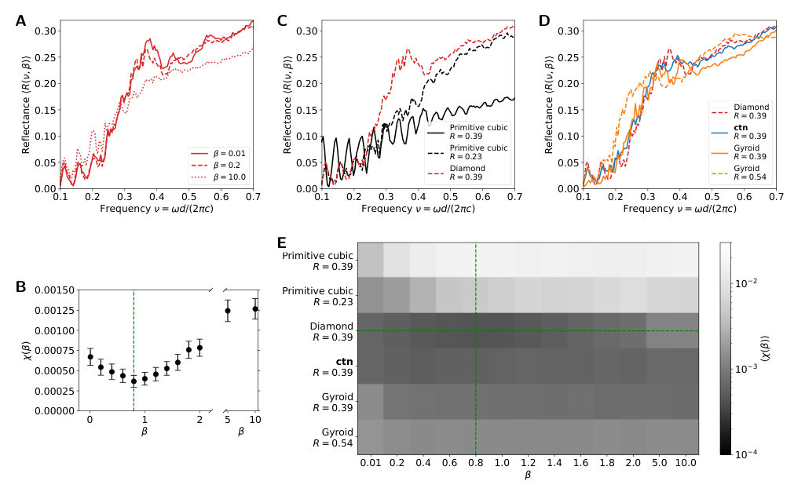
<figcaption class="paper-figure-caption"><b>Fig 3.</b> Figure 2: The disorder parameter β primarily affects the spectral shape of the reflectance, while the network type induces a frequency shift. These effects are detected by the misfit function, which can be used to determine β and the network type of an unknown spectrum. (A) Average reflectance spectra for diamond-like networks with R = 0.39 and three values of β. (B) Misfit function comparing a diamond-like test network with β = 0.8 to diamond-like networks of all β values. Average reflectance spectra of different network types with (C) Z ≥4 and (D) Z ≤4. All networks in (C) and (D) were generated at β = 0.2. For primitive-cubic- and gyroid-like networks, we vary the bond radius to bring...</figcaption>
</figure>
<figure class="paper-figure-card">
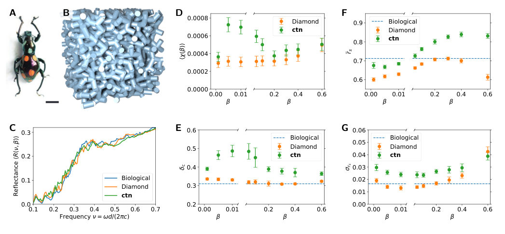
<figcaption class="paper-figure-caption"><b>Fig 4.</b> Figure 3: The reflectance spectrum of the biophotonic network exhibiting blue structural color resembles the spectra of diamond- and ctn-like networks when their pore and ring radii match. (A) Photograph of a Pachyrhynchus congestus mirabilis weevil. Scale bar: 0.5 cm [3]. (B) A section of the weevil’s skeletonized photonic network, giving rise to blue structural coloration. The rendered color corresponds to the simulated optical response for the experimental mean bond length d = 160 nm [3]. (C) The biological reflectance spectrum compared to the average reflectance spectra for diamond-like networks and ctn-like networks, both at β = 0.001. For all networks, we set the bond radius to R =...</figcaption>
</figure>
<figure class="paper-figure-card">
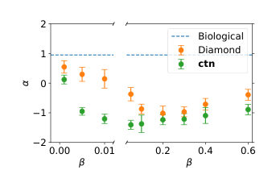
<figcaption class="paper-figure-caption"><b>Fig 5.</b> Figure 4: The hyperuniformity metric α of the biological network and computer-generated networks.</figcaption>
</figure>
</div>

<p><strong>Summary.</strong> This work uses an inverse method to decode the structural information encoded in the reflectance spectrum of natural biophotonic materials. By comparing measured spectra to simulations of disordered photonic networks, the authors determined that blue coloration arises from local scattering resonances associated with pores and rings. This leads to a novel analogy linking biological color to the physics of inverse photonic glasses.</p>
<p><strong>Why it may be interesting.</strong> The application of inverse methods to link macroscopic optical properties (color) back to microscopic structural motifs (rings/pores) is highly relevant to understanding emergent behavior in complex, disordered physical systems.</p>
<details>
<summary>Detailed structure</summary>
<p><strong>Main problem.</strong> The study aims to understand the fundamental relationship between the complex, disordered structure and the resulting color of natural biophotonic materials, such as those found in beetles.</p>
<p><strong>Main result.</strong> The blue structural coloration is governed by local scattering mechanisms involving rings and pores, suggesting an analogy to an inverse photonic glass rather than long-range photonic band-gap effects.</p>
<p><strong>Method.</strong> The authors employed an inverse method, comparing the measured reflectance spectrum of a biological sample against a database of simulated spectra generated from computer-designed disordered photonic networks.</p>
<p><strong>Model / system.</strong> The system involves light interacting with nanoscale, disordered photonic networks (e.g., diamond-like or ctn-like structures) whose disorder is controlled by a parameter $\beta$. The structure is modeled using an extended Wooten-Weaire-Winer algorithm and analyzed via FDTD simulations.</p>
<p><strong>Key observables.</strong> Reflectance spectrum $R(\nu)$, critical pore radius ($\delta_c$), mean ring radius ($r_s$), and the misfit function $\chi(\beta)$.</p>
<p><strong>Important parameters / regimes.</strong> Disorder parameter $\beta$, mean coordination number ($Z$), and the volume fraction ($\phi$).</p>
<p><strong>Assumptions / limitations.</strong> The primary assumption is that local scattering motifs (rings and pores) dictate the spectral response, allowing for an analogy to inverse photonic glasses.</p>
<p><strong>Figures summary.</strong> Figures illustrate how structural metrics (like $r_s$ and $\delta_c$) change with the disorder parameter $\beta$ and network type, and how the misfit function $\chi(\beta)$ can be minimized to identify the best structural match to the biological spectrum.</p>
<p><strong>Paper structure.</strong> The paper establishes the problem of complex structural color, details the inverse method using spectral comparison, applies this method to the weevil's blue coloration, and concludes by proposing the inverse photonic glass analogy based on local resonator physics.</p>
</details>
<details>
<summary>Abstract</summary>
<p>Structural color arises from the interaction of light with nanoscale structures and is widespread in nature. As structural complexity increases, the mechanisms governing coloration become progressively less understood. The optical response of periodic photonic crystals with a spatially periodic refractive index is well described by Bloch theory, whereas that of photonic glasses composed of randomly assembled uniform spheres is more subtle yet well studied. In contrast, disordered photonic networks found in many beetles are among the most complex natural photonic architectures, and the fundamental relationships between their structure and color remain unclear. Here, we use an inverse method to identify the structural features encoded in the reflectance spectrum. By comparing the spectrum of an unknown system with a database of simulated spectra from computer-generated photonic networks, we infer its structural properties. Applying this approach to both simulated networks and the biophotonic network responsible for the blue coloration of the weevil Pachyrhynchus congestus mirabilis, we identify rings and pores as the key local scattering motifs. Their characteristic sizes govern the spectral position of the reflectance peak, whereas short-range disorder controls its width. The inverse method reveals clear spectral signatures of short-range order, whereas the influence of hyperuniformity and primitive similarity appears comparatively weak. This suggests that blue structural coloration is governed by local scattering mechanisms rather than photonic band-gap effects. We propose an analogy to an inverse photonic glass, in which pores and rings act as correlated local resonators. This perspective provides new design principles for bio-inspired structural-color materials.</p>
</details>
<p><sub><a href="#top">↑ back to top</a></sub></p>

<p><a id="paper-2608.25475"></a></p>
<h3 id="interpretable-activation-selection-neural-networks-for-symbolic-regression-of-parameter-dependent-hamiltonian-eigenvalues"><a href="http://arxiv.org/abs/2608.25475v1">Interpretable Activation-Selection Neural Networks for Symbolic Regression of Parameter-Dependent Hamiltonian Eigenvalues</a></h3>
<p><strong>Authors:</strong> Alexander Yu. Kharin, Kirill F. Sheberstov<br>
<strong>Type:</strong> theory · <strong>Category:</strong> disordered systems and neural networks · <strong>PDF:</strong> <a href="https://arxiv.org/pdf/2608.25475v1">https://arxiv.org/pdf/2608.25475v1</a><br>
<strong>Analysis basis:</strong> full PDF text, analyzed in chunks
<strong>Topic relevance:</strong> <code>analog quantum simulation</code> <strong>3/5</strong></p>
<div class="figure-strip-hint">↔ Scroll figures horizontally</div>
<div class="paper-figures-scroll">
<figure class="paper-figure-card">
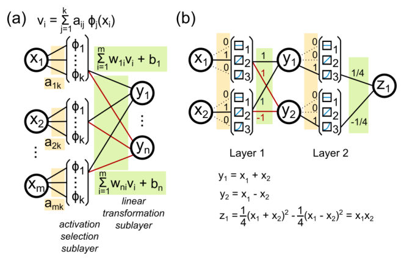
<figcaption class="paper-figure-caption"><b>Fig 1.</b> Fig. 1. Architecture of the activation-selection network (ASN). (a) Structure of a single ASN layer. For each input 𝑥𝑖, 𝑘 candidate activation functions 𝜙𝑗(𝑥𝑖) are evaluated and combined using the softmax- normalized coefficients 𝑎𝑖𝑗. An L0.5-type penalty favours nearly one-hot coefficient vectors, thereby promoting the selection of a single activation for each input node. The transformed variables 𝑣𝑖 are then combined by a linear transformation with weights 𝑤𝑙𝑖 and biases 𝑏𝑙 to produce the output nodes 𝑦𝑙. (b) Two- layer ASN that exactly implements multiplication of two inputs. The first layer forms 𝑦1 = 𝑥1 + 𝑥2 and 𝑦2 = 𝑥1 −𝑥2. The second layer selects the quadratic activation and...</figcaption>
</figure>
<figure class="paper-figure-card">
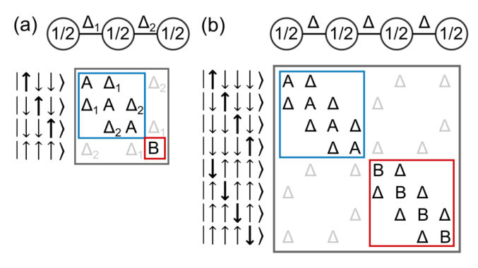
<figcaption class="paper-figure-caption"><b>Fig 2.</b> Fig. 2. Block structure of the Hamiltonian matrices for aliphatic spin chains containing three (a) and four (b) sites. Blue and red outlines indicate the manifolds with diagonal energies A and B, respectively. Black off-diagonal elements describe exchange between neighbouring sites, whereas grey elements connect the two manifolds through simultaneous neighbouring-site spin flips. For (a) Δ1 = ΔJ1/2, Δ2 = ΔJ2/2, A = -5/4 Jintra, B = 3/4 Jintra. For (b), Δ = ΔJ/2, A = -2 Jintra, B = 0.</figcaption>
</figure>
<figure class="paper-figure-card">
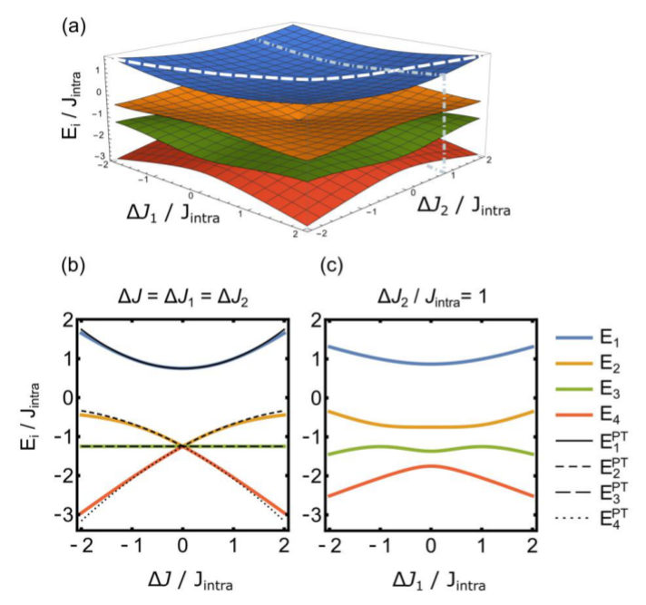
<figcaption class="paper-figure-caption"><b>Fig 3.</b> Fig. 3. Dimensionless eigenenergy surfaces and representative cross-sections for the Hamiltonian of the three- site spin chain. All energies and coupling constants are scaled by Jintra. (a) Numerically calculated eigenenergy surfaces Ei/Jintra as functions of the dimensionless couplings ΔJ1/Jintra and ΔJ2/Jintra. The white dashed and the grey dot- dash lines indicate cross-sections used for (b) and (c), respectively. (b) Cross-section corresponding to the uniform chain, ΔJ1 = ΔJ2 = ΔJ. Coloured curves show the numerically calculated, energy-ordered eigenenergies, while the black solid, dashed, dash-dotted, and dotted curves show the second-order perturbative expressions in Eqs. (9). Across...</figcaption>
</figure>
<figure class="paper-figure-card">
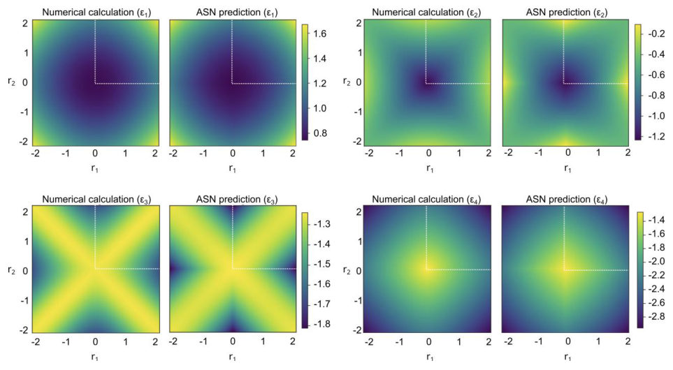
<figcaption class="paper-figure-caption"><b>Fig 4.</b> Fig. 4. Comparison of numerically calculated and ASN-predicted dimensionless eigenenergy surfaces for the three-site spin chain. Here, ri = ΔJi/Jintra and εk = Ek/Jintra. For each εk, the left and right panels show the numerical eigenenergies and corresponding ASN predictions, respectively. The ASN was trained within the first-quadrant domain 0 ≤ r1, r2 ≤ 2, indicated by the white dotted lines, and the remaining quadrants were reconstructed using the independent sign-reversal symmetries of r1 and r2. A common colour scale is used for the numerical and predicted surfaces within each pair. The activation set used for training was {0, 𝑥, 𝑥2}.</figcaption>
</figure>
<figure class="paper-figure-card">

<figcaption class="paper-figure-caption"><b>Fig 5.</b> Fig. 4 compares the numerically calculated dimensionless eigenenergy surfaces with the ASN predictions. Within the first-quadrant training domain, the ASN reproduces the curvature and</figcaption>
</figure>
</div>

<p><strong>Summary.</strong> This paper introduces an Activation-Selection Network (ASN) to perform symbolic regression on the eigenvalues of complex, parameter-dependent spin-chain Hamiltonians. By training the network on numerical data derived from NMR systems, the authors generate explicit, analytical mathematical expressions for the eigenvalues. The work establishes the ASN as a differentiable framework for extracting compact physical laws, though it notes that predefined basis sets can sometimes achieve comparable accuracy.</p>
<p><strong>Why it may be interesting.</strong> This work directly bridges machine learning (symbolic regression) with quantum many-body physics, offering a powerful, differentiable tool to extract physical insight (analytical forms) from complex numerical eigenvalue calculations, which is highly valuable for understanding quantum dynamics.</p>
<details>
<summary>Detailed structure</summary>
<p><strong>Main problem.</strong> The paper aims to find interpretable analytical approximations for the eigenvalues of parameter-dependent Hamiltonians by employing symbolic regression techniques.</p>
<p><strong>Main result.</strong> The proposed Activation-Selection Network (ASN) successfully generates explicit, compact symbolic expressions for the eigenvalues, though it was found that a suitable predefined basis can match or slightly outperform the adaptive selection mechanism.</p>
<p><strong>Method.</strong> The core method is the use of an ASN, a differentiable symbolic-regression architecture, trained to map input parameters to eigenvalue ratios. The process involves normalizing parameters to dimensionless ratios and using sparse regularization to enforce sparsity in the learned functional combination.</p>
<p><strong>Model / system.</strong> The study applies the method to effective three- and four-site spin-chain Hamiltonians relevant to zero-quantum nuclear magnetic resonance (NMR). The Hamiltonian involves intrapair and interpair coupling terms, and the analysis often separates the system into even- and odd-parity blocks.</p>
<p><strong>Key observables.</strong> Eigenvalues (or eigenvalue differences) of the Hamiltonian, which determine observable zero-quantum transition frequencies.</p>
<p><strong>Important parameters / regimes.</strong> Coupling constants like $J_{	ext{intra}}$ and $\Delta J_i$, and the dimensionless ratios formed from these couplings.</p>
<p><strong>Assumptions / limitations.</strong> The primary assumption is that the underlying physical relationship can be approximated by a combination of predefined analytical functions (e.g., $\{0, x, x^2\}$). The method also relies on normalizing parameters to ensure dimensional homogeneity.</p>
<p><strong>Figures summary.</strong> Figures illustrate the structure of the ASN layers, demonstrate the network's ability to implement basic arithmetic (like multiplication), and show the resulting dimensionless eigenenergy surfaces for the three-site spin chain.</p>
<p><strong>Paper structure.</strong> The paper introduces the ASN framework, details the physical model (spin-chain Hamiltonians), applies the method to calculate eigenvalues for three- and four-site systems, compares the results against established methods like degenerate perturbation theory, and concludes by analyzing the performance and limitations of the adaptive selection process.</p>
</details>
<details>
<summary>Abstract</summary>
<p>Analytical approximations to eigenvalues of parameter-dependent Hamiltonians can provide physical insight that is not readily apparent from numerical diagonalization alone. Here, we introduce an activation-selection network (ASN), a differentiable symbolic-regression architecture in which each input node learns a sparse combination of predefined analytical functions, and the trained network can be converted directly into an explicit expression. Before regression, the Hamiltonian parameters and eigenvalues are expressed as dimensionless ratios. This normalization enforces dimensional homogeneity, reduces the number of independent variables, and ensures that the extracted expressions do not depend on the choice of energy units. Using the library {0, x, x^2}, compositions across successive hidden layers generate polynomial expansions of progressively higher degree; polynomial expansions of arbitrary finite degree can therefore be obtained in principle by increasing the network depth. We apply the ASN to effective three- and four-site spin-chain Hamiltonians relevant to zero-quantum nuclear magnetic resonance. Comparisons with degenerate perturbation theory show that the extracted expressions capture the expected constant, linear, and quadratic structure. Fixed-basis least-squares models match or slightly outperform the ASN when an appropriate quadratic basis is specified in advance, while inclusion of a radial feature improves the local approximation near the degeneracy. These results establish the ASN as a differentiable framework for selecting compact symbolic representations when several functional forms are plausible, while showing that adaptive activation selection does not provide an intrinsic accuracy advantage over a suitable predefined basis.</p>
</details>
<p><sub><a href="#top">↑ back to top</a></sub></p>

<p><a id="paper-2608.25929"></a></p>
<h3 id="magic-of-kitaev-spin-liquids"><a href="http://arxiv.org/abs/2608.25929v1">Magic of Kitaev spin liquids</a></h3>
<p><strong>Authors:</strong> Eleonora Lamma, Tim Bauer, Marcello Dalmonte, Mario Collura<br>
<strong>Type:</strong> theory · <strong>Category:</strong> strongly correlated electrons · <strong>PDF:</strong> <a href="https://arxiv.org/pdf/2608.25929v1">https://arxiv.org/pdf/2608.25929v1</a><br>
<strong>Analysis basis:</strong> full PDF text, analyzed in chunks
<strong>Topic relevance:</strong> <code>analog quantum simulation</code> <strong>3/5</strong></p>
<div class="figure-strip-hint">↔ Scroll figures horizontally</div>
<div class="paper-figures-scroll">
<figure class="paper-figure-card">
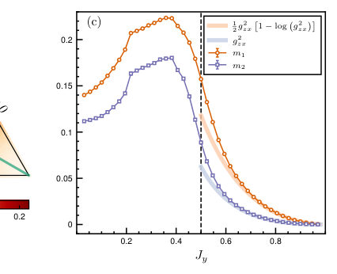
<figcaption class="paper-figure-caption"><b>Fig 1.</b> Figure 1: (a) Slice of a honeycomb lattice with the three bond types x, y and z corresponding to different edge colors. We consider lattices with periodic boundary conditions and supercell lattice vectors L1e1 and L2e2, where e1,2 = (± 1</figcaption>
</figure>
<figure class="paper-figure-card">
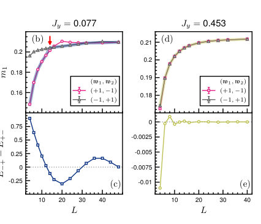
<figcaption class="paper-figure-caption"><b>Fig 2.</b> Figure 2: (a) Ground-state SRE density m1 vs linear system size L for different val- ues of Jy = 1 −2Jx = 1 −2Jz along the green line in Fig. 1(b), with dashed (solid) lines corresponding to the gapped (gapless) phase. The data for Jy &gt; 0 were ob- tained for a 2D system with linear system sizes L1 = L2 = L and twisted periodic boundary conditions, with sample sizes Ns ranging from 104 for Jy ∼0 to 105 for Jy ∼0.5. The data for the decoupled limit Jy = 0 were obtained for a 1D spin chain and Ns = 107, see App. B. (b), (d) m1 vs L for vacuum states in different vortex- free sectors parametrized by (w1,w2) at (b) Jy = 0.077 and (d) Jy = 0.453. The corresponding energy differences E+−−E−+ are...</figcaption>
</figure>
<figure class="paper-figure-card">
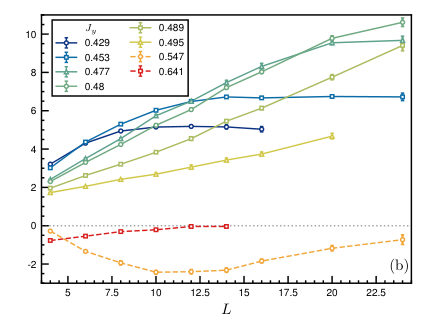
<figcaption class="paper-figure-caption"><b>Fig 3.</b> Figure 3: Volume-law correction D1 (Eq. (35)) vs L (a) for low Jy and (b) close to the phase transition at Jy = 0.5. The results were obtained for the same system parameters used in Fig. 2, see the caption for details.</figcaption>
</figure>
<figure class="paper-figure-card">
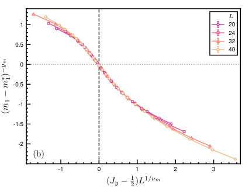
<figcaption class="paper-figure-caption"><b>Fig 4.</b> Figure 4: (a) SRE density m1 around the critical point Jy = 0.5 for different linear system sizes. The shaded area indicates the interval used in the χ2 minimization. (b) Finite-size collapse of m1 according to the rescaling in Eq. (36) for the system sizes used in the χ2 minimization, with obtained values m∗ 1 = 0.3229 ± 0.0001, ym = −0.6701 ± 0.0078, νm = 1.0878 ± 0.0122. These values, however, strongly depend on the selected interval (shaded area in (a)). The results were obtained for the same system parameters used in Fig. 2, see the caption for details.</figcaption>
</figure>
<figure class="paper-figure-card">
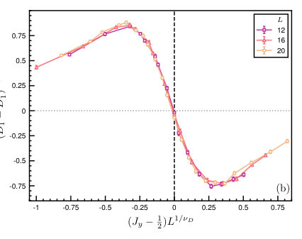
<figcaption class="paper-figure-caption"><b>Fig 5.</b> Figure 5: (a) Volume-law corrections D1 vs Jy close the the phase transition at Jy = 0.5 for different linear system sizes. The shaded area indicates the interval used in the χ2 minimization. (b) Finite-size collapse of D1 according to the rescal- ing in Eq. (36), with obtained values D∗ 1 = 1.6396 ± 0.1137, yD = 0.7424 ± 0.0172, νD = 1.0484 ± 0.0318. The results were obtained for the same system parameters used in Fig. 2, see the caption for details.</figcaption>
</figure>
</div>

<p><strong>Summary.</strong> This work analyzes the Kitaev honeycomb model to quantify quantum complexity using the stabilizer Rényi entropy (SRE), or 'magic.' By calculating SRE across the model's phase diagram, the authors demonstrate that this measure peaks in the gapless QSL phase and provides universal scaling information at the topological phase transition.</p>
<p><strong>Why it may be interesting.</strong> The use of 'magic' as a complexity measure provides a novel tool to probe the structure of quantum correlations in strongly correlated magnetic systems, complementing standard entanglement measures.</p>
<details>
<summary>Detailed structure</summary>
<p><strong>Main problem.</strong> The paper investigates quantum complexity in Quantum Spin Liquids (QSLs) by studying a diagnostic measure called 'magic' or nonstabilizerness, which goes beyond standard entanglement measures.</p>
<p><strong>Main result.</strong> Magic is found to be largest in the gapless phase of the Kitaev model, decreases in gapped phases, and exhibits universal scaling at the topological phase transition.</p>
<p><strong>Method.</strong> The authors compute the stabilizer Rényi entropy (SRE) by mapping Pauli strings to itinerant Majorana operators in the model's free-fermion description, enabling sampling via optimized algorithms for Gaussian states.</p>
<p><strong>Model / system.</strong> The study focuses on the Kitaev honeycomb model (KHM) on the honeycomb lattice, which realizes QSLs and is characterized by three bond types ($x, y, z$). The model is analyzed across its phase diagram, including gapless and gapped topological phases.</p>
<p><strong>Key observables.</strong> Stabilizer Rényi entropy (SRE) and its density ($m_n$), which quantifies 'magic' or nonstabilizerness.</p>
<p><strong>Important parameters / regimes.</strong> The ratio of coupling constants ($J_x, J_y, J_z$), the system size ($N$ or $L$), and the proximity to the gapless/gapped phase boundaries.</p>
<p><strong>Assumptions / limitations.</strong> The analysis relies on the free-fermion description of the KHM and adapting an existing sampling algorithm for fermionic Gaussian states.</p>
<p><strong>Figures summary.</strong> Figures illustrate the SRE across the phase diagram, showing the peak in the gapless phase and the scaling behavior at the critical point.</p>
<p><strong>Paper structure.</strong> The paper systematically studies SRE across the entire phase diagram of the KHM, deriving the mathematical correspondence between Pauli strings and Majorana operators, and analyzing the results in the gapless, gapped, and critical regimes.</p>
</details>
<details>
<summary>Abstract</summary>
<p>Quantum spin liquids (QSLs) are long-range entangled phases of matter and a natural setting for exploring how quantum correlations generate quantum complexity. Motivated by the emergence of magic, or nonstabilizerness, as a diagnostic of many-body complexity beyond entanglement, we study magic of QSLs by computing the stabilizer Rényi entropy (SRE) of the Kitaev honeycomb model. We derive a correspondence between Pauli strings and products of itinerant Majorana operators in the model's free-fermion description; this enables the sampling of SRE using an optimized algorithm for Gaussian states in systems with thousands of spins. Our results show that magic is largest in the gapless phase, where subleading volume-law corrections indicate nonlocal contributions, while in the gapped phases, SRE decreases in quantitative agreement with a perturbative expansion that we develop in the anisotropic limit. At the topological phase transition, SRE exhibits universal scaling dictated by critical exponents.</p>
</details>
<p><sub><a href="#top">↑ back to top</a></sub></p>

<p><a id="paper-2608.25211"></a></p>
<h3 id="multipair-resilient-entanglement-swapping-with-complementary-linear-optical-measurements"><a href="http://arxiv.org/abs/2608.25211v1">Multipair-resilient entanglement swapping with complementary linear-optical measurements</a></h3>
<p><strong>Authors:</strong> Siavash Mirzaei Ghormish, Ryan M. Camacho<br>
<strong>Type:</strong> theory · <strong>Category:</strong> quantum information and computing · <strong>PDF:</strong> <a href="https://arxiv.org/pdf/2608.25211v1">https://arxiv.org/pdf/2608.25211v1</a><br>
<strong>Analysis basis:</strong> full PDF text, analyzed in chunks
<strong>Topic relevance:</strong> <code>quantum measurements</code> <strong>3/5</strong></p>
<div class="figure-strip-hint">↔ Scroll figures horizontally</div>
<div class="paper-figures-scroll">
<figure class="paper-figure-card">
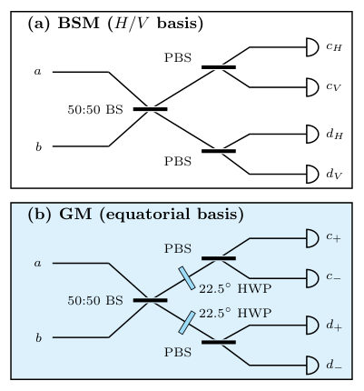
<figcaption class="paper-figure-caption"><b>Fig 1.</b> FIG. 1. Analyzer layouts. Both mix the input rails a and b on a 50:50 beam splitter (BS). The BSM resolves H/V directly at a polarizing beam splitter (PBS) in each output rail; the GM inserts a 22.5◦half-wave plate (HWP) before each PBS and resolves +/−. Their complementary decisions are sum- marized in Table I.</figcaption>
</figure>
<figure class="paper-figure-card">
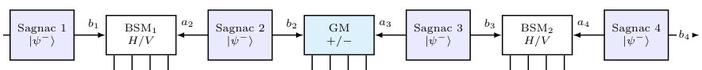
<figcaption class="paper-figure-caption"><b>Fig 2.</b> FIG. 2. Four-source PBP transmitter. Two outer BSMs connect source pairs 1–2 and 3–4, while the central GM connects sources 2–3. Each black line is one spatial rail containing both polarization modes; the surviving outer rails a1 and b4 are delivered to Alice and Bob. The four resolved outputs of each analyzer are monitored by photon-number-resolving detectors. Removing Sagnac 4 and BSM2 gives the three-source BSM–GM transmitter, whose right endpoint is b3.</figcaption>
</figure>
<figure class="paper-figure-card">
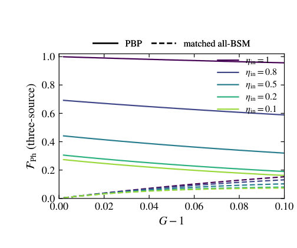
<figcaption class="paper-figure-caption"><b>Fig 3.</b> FIG. 3. Photon–photon fidelity FPh versus mean photon number G −1 for internal efficiencies ηT = ηG = ηin = 1, 0.8, 0.5, 0.2, 0.1, three-source. Solid: PBP network (BSM– GM). Dashed: matched all-BSM chain (BSM–BSM). The PBP fidelity approaches unity at low brightness for all effi- ciencies, whereas the all-BSM fidelity collapses toward zero because its pre-postselection state is vacuum-dominated.</figcaption>
</figure>
<figure class="paper-figure-card">
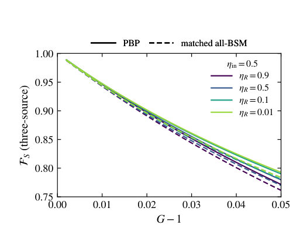
<figcaption class="paper-figure-caption"><b>Fig 4.</b> FIG. 4. Spin–spin fidelity FS versus G −1 for output trans- missions ηR = 0.9, 0.5, 0.1, 0.01, three-source, ηin = 0.5. Solid: PBP; dashed: matched all-BSM chain. The PBP network lies above the matched chain throughout; the modest rise with de- creasing ηR arises from the reweighting of histories admitted by internal loss (see text).</figcaption>
</figure>
<figure class="paper-figure-card">
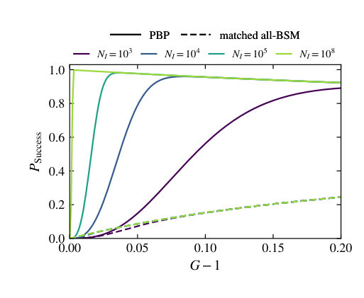
<figcaption class="paper-figure-caption"><b>Fig 5.</b> FIG. 5. Success probability PSuccess versus G −1 for spec- tral multiplexing NI = 103, 104, 105, 108 (bottom to top), three-source, lossless. Solid: PBP; dashed: matched all-BSM chain. The PBP network reaches near-deterministic opera- tion at high multiplexing; the all-BSM chain remains below the quasi-deterministic threshold.</figcaption>
</figure>
</div>

<p><strong>Summary.</strong> This paper addresses false heralds in multi-source entanglement swapping caused by multipair emission in SPDC sources. The authors propose and analyze the use of a complementary measurement, the Green Machine (GM), alongside the standard BSM. This combination allows the network to maintain high fidelity and herald an exact Bell state even in complex, multi-stage quantum communication links.</p>
<p><strong>Why it may be interesting.</strong> This work provides rigorous theoretical bounds and protocols for improving quantum communication links by designing optimal measurement apparatuses to overcome fundamental source limitations like multipair emission.</p>
<details>
<summary>Detailed structure</summary>
<p><strong>Main problem.</strong> Entanglement swapping using spontaneous parametric down-conversion (SPDC) sources suffers from false heralds due to multipair emission, which conventional Bell-state measurements (BSM) cannot resolve.</p>
<p><strong>Main result.</strong> A cascaded network employing a complementary analyzer, the Green Machine (GM), can resolve these ambiguities, leading to an exact Bell state herald in the lossless limit for four or more sources.</p>
<p><strong>Method.</strong> The authors analyze the acceptance probabilities of BSM and GM for various two-photon Fock states, utilizing an all-orders Gaussian-state analysis to characterize the required complementary measurement pair.</p>
<p><strong>Model / system.</strong> The system models entanglement swapping in a network of multiple SPDC sources, analyzed in the two-photon input space with polarization and rail degrees of freedom.</p>
<p><strong>Key observables.</strong> Acceptance probabilities for different two-photon classes ($C1, C2, C3, C4$), photon-photon fidelity ($F_{Ph}$), and Bell fraction ($B_{Ph}$).</p>
<p><strong>Important parameters / regimes.</strong> Number of sources ($N \ge 3$), coupling/detector/channel loss, and the phase parameter ($\phi$) of the GM.</p>
<p><strong>Assumptions / limitations.</strong> The analysis assumes passive four-mode, number-resolving analyzers and ideal lossless propagation for the ultimate theoretical limit.</p>
<p><strong>Figures summary.</strong> Figure 1 illustrates the BSM and GM analyzer layouts; Figure 2 shows the four-source network structure; Table D3 confirms the unit photonic fidelity for $N=4, 5, 6$ in the lossless limit.</p>
<p><strong>Paper structure.</strong> The paper first establishes the failure of conventional BSMs, introduces the complementary GM, derives the necessary class-covering condition, and then extends the analysis to multi-source chains (three-source and four-source) using all-orders Gaussian methods.</p>
</details>
<details>
<summary>Abstract</summary>
<p>Multipair emission is a principal source of false heralds in entanglement swapping with spontaneous parametric down-conversion sources. A conventional Bell-state measurement (BSM) cannot distinguish the desired arrival of one photon from each neighboring source from a mixed-polarization double emission by one source accompanied by vacuum from the other. We show that a cascaded network can resolve this ambiguity by allowing its successive swapping stations to perform different measurements. A direct-basis BSM rejects same-polarization double emissions, whereas a balanced equatorial analyzer, implemented by a four-mode Green Machine (GM), uses two-photon interference to reject mixed-polarization double emissions. At the same time, it recovers same-polarization inter-source events rejected by the BSM as resolved $φ$-type Bell heralds. Their rejection sets jointly cover both single-source two-photon classes while retaining contributions from both useful inter-source classes. We classify the passive four-mode, number-resolving analyzers satisfying this condition and identify the BSM and GM as canonical balanced representatives. Using a Gaussian-state analysis exact to all orders of multipair emission, we evaluate three-source BSM--GM and four-source BSM--GM--BSM Pure Bell Pair sources under coupling, detector, and channel loss. The three-source network suppresses the leading infidelity, while the four-source network heralds an exact Bell state in the lossless limit, a property that holds for every alternating BSM--GM chain with four or more sources. The fidelity advantage over source-count-matched all-BSM networks persists at every loss level studied, a single-channel rate advantage appears without multiplexing, and spectral multiplexing raises the Bell-pair delivery probability toward the asymptotically deterministic limit.</p>
</details>
<p><sub><a href="#top">↑ back to top</a></sub></p>

<p><a id="paper-2608.25696"></a></p>
<h3 id="physics-informed-quantum-algorithms-for-glueball-like-excitations-in-a-math422math-lattice-gauge-theory"><a href="http://arxiv.org/abs/2608.25696v1">Physics-informed quantum algorithms for glueball-like excitations in a $\mathbb{Z}_2$ lattice gauge theory</a></h3>
<p><strong>Authors:</strong> Dan-Bo Zhang<br>
<strong>Type:</strong> theory · <strong>Category:</strong> quantum information and computing · <strong>PDF:</strong> <a href="https://arxiv.org/pdf/2608.25696v1">https://arxiv.org/pdf/2608.25696v1</a><br>
<strong>Analysis basis:</strong> full PDF text, analyzed in chunks
<strong>Topic relevance:</strong> <code>analog quantum simulation</code> <strong>3/5</strong></p>
<div class="figure-strip-hint">↔ Scroll figures horizontally</div>
<div class="paper-figures-scroll">
<figure class="paper-figure-card">
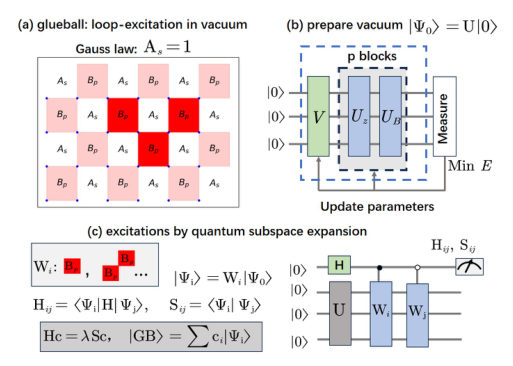
<figcaption class="paper-figure-caption"><b>Fig 1.</b> FIG. 1. Algorithmic workflow. (a) Rotated representation of the Z2 gauge model. Contractible products of magnetic pla- quettes generate closed-flux loops on a vacuum. (b) Vacuum preparation starts from the loop-gas circuit V (θ) and is re- fined by gauge-preserving variational layers. (c) Wilson-loop excitations define a nonorthogonal subspace in which low- lying glueball-like states and their observables are obtained from measured overlap and Hamiltonian matrices.</figcaption>
</figure>
<figure class="paper-figure-card">

<figcaption class="paper-figure-caption"><b>Fig 2.</b> FIG. 2. Vacuum preparation on the 6 × 4 periodic lattice. Left (a and b): comparison of the one-parameter loop-gas ansatz with exact diagonalization over the interpolation parameter x. Right(c and d): HVA refinement at the representative point x = 0.2. The variational energy approaches the exact value and the state infidelity decreases with layer number p. The two panels illustrate complementary roles: the loop gas captures the exactly solvable limits and much of the bulk trend, while the HVA repairs the intermediate-coupling correlations that the factorized plaquette coordinates cannot represent.</figcaption>
</figure>
<figure class="paper-figure-card">

<figcaption class="paper-figure-caption"><b>Fig 3.</b> FIG. 3. Structure of the low-lying QSE states at x = 0.6. Left: coefficients associated with elementary-plaquette loop operators in a fixed QSE basis. Right: local elementary-loop motif density ⟨np⟩. The first excited state is spatially uniform in these diagnostics. The two higher states are degenerate within the reported precision; their individual coefficient patterns are therefore basis-dependent until a spatial symmetry is diagonalized inside the degenerate subspace. Choosing reflection eigenstates produces the displayed even/odd patterns (P = ±1), while the motif density provides a basis-independent view of their spatial support.</figcaption>
</figure>
<figure class="paper-figure-card">

<figcaption class="paper-figure-caption"><b>Fig 4.</b> FIG. 4. Subspace compression. (a) energy errors of the three lowest glueball-like excitations decrease as the largest Wilson-loop area np is increased. (b) vacuum-only EC for the first excitation, using the training set {x −0.05C, . . . , x, . . . , x + 0.05C} with C = 1, 2, 3. (c) combined EC and loop bases for the two lowest excitations of the target Hamiltonian at x = 0.4. The available training vacua are sampled on the grid x = 0.05, 0.10, . . . , 0.70, and C enlarges the selected training set. The labels 0p, 1p, and 2p denote the three loop-basis choices used in the data, with loop-size cutoffs np = 0, 1, 2, respectively.</figcaption>
</figure>
<figure class="paper-figure-card">

<figcaption class="paper-figure-caption"><b>Fig 5.</b> FIG. 6. Production of bare closed-loop motifs after quenches from the electric vacuum at x0 = 1 to x1 = 0.1 and x1 = 0.6. The curves correspond to four loop shapes, denoted L1, L2, L3, and Λ in the original numerical data. The deep quench to x1 = 0.1 generates substantially more loop weight, including larger motifs, whereas the x1 = 0.6 quench remains electric- field dominated and suppresses extended loops.</figcaption>
</figure>
</div>

<p><strong>Summary.</strong> This work introduces a physics-informed quantum algorithm to study glueball-like excitations in a Z2 lattice gauge theory. It uses variational quantum circuits and Wilson-loop expansions to calculate the excitation spectrum and spatial size of these excitations. The approach is valuable because it systematically incorporates physical symmetries and structure, making it transferable to more complex, non-Abelian gauge theories.</p>
<p><strong>Why it may be interesting.</strong> The methodology—using physical structure (gauge invariance, loop operators) to constrain the quantum computational basis—is a powerful paradigm for applying quantum algorithms to strongly correlated lattice models, which is highly relevant to quantum simulation.</p>
<details>
<summary>Detailed structure</summary>
<p><strong>Main problem.</strong> The paper develops a physics-informed quantum-computing framework to study glueball-like excitations in a lattice gauge theory.</p>
<p><strong>Main result.</strong> The framework successfully characterizes the low-lying excitation spectrum and the spatial profile of these excitations by projecting the Hamiltonian onto a gauge-invariant subspace.</p>
<p><strong>Method.</strong> It employs a combination of variational quantum circuits for vacuum preparation, Wilson-loop quantum subspace expansion (QSE) for excitations, and eigenvector continuation for basis compression.</p>
<p><strong>Model / system.</strong> The study is performed on a (2+1)-dimensional Z2 lattice gauge theory, governed by a Hamiltonian involving magnetic and electric plaquette terms. The physical states must satisfy Gauss's law.</p>
<p><strong>Key observables.</strong> Glueball-like excitation energy spectrum, Bethe-Salpeter (BS)-type radius quantifying spatial broadening, and quench observables $N_K(t)$.</p>
<p><strong>Important parameters / regimes.</strong> The coupling parameter $x$ controls the transition between confined ($x > x_c$) and deconfined ($x < x_c$) regimes, with $x_c \simeq 0.2473$.</p>
<p><strong>Assumptions / limitations.</strong> The framework is demonstrated in an Abelian model but is claimed to be naturally transferable to non-Abelian lattice gauge theories. The QSE basis size is limited by the maximum loop size considered.</p>
<p><strong>Figures summary.</strong> Figures illustrate the workflow, showing vacuum preparation via loop-gas circuits refined by variational layers, and visualizing how Wilson-loop excitations define a nonorthogonal subspace for state calculation.</p>
<p><strong>Paper structure.</strong> The paper proceeds by defining the physical problem in the Z2 lattice gauge theory, developing the physics-informed quantum framework (vacuum preparation and excitation construction), and then applying this to calculate spectral properties and spatial profiles using BS-radius and quench dynamics.</p>
</details>
<details>
<summary>Abstract</summary>
<p>Glueball spectroscopy with quantum computing requires both a correlated gauge vacuum and a systematic construction of its low-lying pure-gauge excitations. We develop a physics-informed quantum-computing framework for these tasks in a $(2+1)$-dimensional $\mathbb{Z}_2$ lattice gauge theory. We use the term \emph{glueball-like} for localized closed-flux excitations on the confining side of this Abelian model, without identifying them with the non-Abelian glueballs of QCD. The central strategy is to organize the computation around the physical structure of the glueball-like state rather than to search a generic many-body excitation space. We prepare the gauge vacuum variationally and use Wilson-loop quantum subspace expansion to construct and characterize the low-lying excitations. Moreover, eigenvector continuation uses nearby ground states to capture the growing loop dressing without a rapidly enlarged Wilson-loop basis, while a Bethe--Salpeter-type radius quantifies the associated spatial broadening. We further use quench dynamics to probe nonequilibrium production. Although demonstrated in an Abelian model, the framework is built from gauge-invariant vacuum and excitation structures and is naturally transferable to non-Abelian lattice gauge theories.</p>
</details>
<p><sub><a href="#top">↑ back to top</a></sub></p>

<p><a id="paper-2608.26023"></a></p>
<h3 id="rare-earth-oxysulfides-remath430mathomath431maths-as-model-mixed-anion-frustrated-magnets"><a href="http://arxiv.org/abs/2608.26023v1">Rare-earth oxysulfides RE$_2$O$_2$S as model mixed-anion frustrated magnets</a></h3>
<p><strong>Authors:</strong> Austin M. Ferrenti, Ksenia Khoroshun, Mohamed Oudah, Graham King, Jonathan Gaudet, Alannah M. Hallas<br>
<strong>Type:</strong> both · <strong>Category:</strong> strongly correlated electrons · <strong>PDF:</strong> <a href="https://arxiv.org/pdf/2608.26023v1">https://arxiv.org/pdf/2608.26023v1</a><br>
<strong>Analysis basis:</strong> full PDF text, analyzed in chunks
<strong>Topic relevance:</strong> <code>analog quantum simulation</code> <strong>3/5</strong></p>
<div class="figure-strip-hint">↔ Scroll figures horizontally</div>
<div class="paper-figures-scroll">
<figure class="paper-figure-card">

<figcaption class="paper-figure-caption"><b>Fig 1.</b> FIG. 1. Crystal structure of the RE2O2S family of mixed-anion magnets, shown (a) within and (b) normal to the triangular-bilayer slab. Although equivalent by symmetry, RE atoms in the upper (RE3+ u ) and lower (RE3+ l ) halves of the bilayer slab have been shaded differently for clarity. (c) Representative Rietveld refinement of powder X-ray diffraction (pXRD) data for La2O2S, where the black, orange, and gray datasets denote the experimental and modeled patterns, and the difference between them. The black and red tick marks represent reflections attributed to La2O2S and an internal Si standard, respectively. The pXRD patterns for the full lanthanide series are shown in the inset with...</figcaption>
</figure>
<figure class="paper-figure-card">

<figcaption class="paper-figure-caption"><b>Fig 2.</b> FIG. 2. (a) Representative temperature-dependent magnetic susceptibility (black), its inverse (gold), and Curie Weiss fit lines (dashed black) of a Ce2O2S powder sample. Scaled low-temperature magnetic susceptibility of representative RE2O2S powder samples for (b) RE = Ce - Sm, (c) RE = Eu - Dy, and d) RE = Ho - Yb, highlighting the observed magnetic ordering transitions. (e) Expected and calculated effective magnetic moments (µeff) and Curie-Weiss temperatures (θCW) for each RE2O2S phase, derived from high- and low-temperature Curie-Weiss fitting of the measured magnetic susceptibility, respectively.</figcaption>
</figure>
<figure class="paper-figure-card">

<figcaption class="paper-figure-caption"><b>Fig 3.</b> FIG. 4. a) Zero-field specific heat as a function of temperature for Ce2O2S (brown), La2O2S (black line), and their differ- ence (gold). (b) Zero-field magnetic specific heat divided by temperature as a function of temperature for Ce2O2S (gold), Gd2O2S (red), Dy2O2S (purple), and Yb2O2S (black) powder samples. (c) Integrated magnetic entropy rise as a function of temperature for each composition up to T = 50 K.</figcaption>
</figure>
<figure class="paper-figure-card">

<figcaption class="paper-figure-caption"><b>Fig 4.</b> FIG. 5. (a) Inverse magnetic susceptibility as a function of temperature, (b) powder diffraction patterns, and (c) Raman scattering spectra collected from Nd2O2S powder samples A (gold), B (magenta), and C (purple). The stars in (a) denote peaks attributed to an internal Si standard and the solid black lines in (c) represent the high-temperature Curie-Weiss fit for each sample. (d) Reduced pair distribution function [G(r)] collected from each Nd2O2S powder sample. Experimental datasets are shown in black, theoretical fits are colored by sample as in (a)-(c), and the difference curve between them is shown in gray.</figcaption>
</figure>
</div>

<p><strong>Summary.</strong> This work reports on rare-earth oxysulfides ($ ext{RE}_2   ext{O}_2    ext{S}$), which are mixed-anion magnets with a quasi-2D slab structure. By synthesizing and characterizing these materials, the authors demonstrate that the mixed-anion character allows for the tuning of magnetic frustration. The combination of structural analysis and magnetic measurements confirms the existence of tunable, anisotropic magnetic ground states.</p>
<p><strong>Why it may be interesting.</strong> The interplay between structural disorder (mixed anions) and magnetic frustration in quasi-2D systems is a rich area for theoretical modeling, potentially involving spin liquid physics or complex exchange Hamiltonians.</p>
<details>
<summary>Detailed structure</summary>
<p><strong>Main problem.</strong> The study investigates the tunability of frustrated magnetic ground states in rare-earth mixed-anion materials.</p>
<p><strong>Main result.</strong> The $  ext{RE}_2   ext{O}_2    ext{S}$ compounds exhibit long-range antiferromagnetic order and show tunable magnetic frustration due to their quasi-2D, mixed-anion structure.</p>
<p><strong>Method.</strong> The study combines synthesis, structural characterization (pXRD, PDF analysis), and magnetic measurements ($\chi(T)$, $M(H)$) with theoretical modeling (CEF calculations).</p>
<p><strong>Model / system.</strong> The physical system is the rare-earth oxysulfide ($ ext{RE}_2   ext{O}_2    ext{S}$), which forms a triangular-bilayer slab lattice geometry, acting as an intermediate between 3D oxides and 2D delafossites.</p>
<p><strong>Key observables.</strong> Long-range AFM order, metamagnetic transitions, lattice parameters ($a, c$), and magnetic susceptibility ($\mu_{	ext{eff}}, 	heta_{	ext{CW}}$).</p>
<p><strong>Important parameters / regimes.</strong> The rare-earth element (RE) identity, the degree of structural disorder ($x$ in $   ext{RE}<em 2_x="2+x">2   ext{O}</em>$), and temperature ($T_N$).}    ext{S}_{1-x</p>
<p><strong>Assumptions / limitations.</strong> The structural disorder observed via PDF analysis is attributed to synthesis-dependent oxygen/sulfur mixing, and average structural changes are assumed representative across the RE series.</p>
<p><strong>Figures summary.</strong> Figures show crystal structures, pXRD refinements tracking lattice parameter changes with RE size, and PDF data illustrating structural disorder across different samples.</p>
<p><strong>Paper structure.</strong> The paper progresses from structural characterization (pXRD, PDF) to magnetic measurements ($\chi(T)$, $M(H)$), establishing the structural basis for the observed magnetic frustration and tunability.</p>
</details>
<details>
<summary>Abstract</summary>
<p>The study of low-dimensional and anisotropic magnetism is a promising avenue for the discovery of novel quantum phenomena. Mixed-anion materials, defined by the coordination of metal cations by two or more distinct anionic species, provide an intrinsically anisotropic platform for the tuning of structural, magnetic, and electronic properties. In this work, we report the synthesis and characterization of a family of rare-earth oxysulfide (RE$_2$O$_2$S) antiferromagnets (AFM) possessing a triangular-bilayer slab lattice geometry. Long-range AFM order is observed for the majority of compositions, with several (RE = Ce, Pr, Nd, Sm) having been previously unreported. Although assumed to form stoichiometrically, pair distribution function (PDF) analysis provides evidence for significant, synthesis-dependent interslab structural disorder as RE$_2$O$_{2+x}$S$_{1-x}$, resulting in significant variability in the bulk magnetic response of the Nd member. This work highlights the tunability of frustrated magnetic ground states in rare-earth-based mixed-anion materials, and the importance of thorough structural characterization in the discovery of new mixed-anion magnets.</p>
</details>
<p><sub><a href="#top">↑ back to top</a></sub></p>

<p><a id="paper-2608.25242"></a></p>
<h3 id="dynamical-and-conformational-behavior-of-a-polymer-in-a-crowded-solution"><a href="http://arxiv.org/abs/2608.25242v1">Dynamical and conformational behavior of a polymer in a crowded solution</a></h3>
<p><strong>Authors:</strong> Setarehalsadat Changizrezaei, Colin Denniston<br>
<strong>Type:</strong> theory · <strong>Category:</strong> statistical mechanics · <strong>PDF:</strong> <a href="https://arxiv.org/pdf/2608.25242v1">https://arxiv.org/pdf/2608.25242v1</a><br>
<strong>Analysis basis:</strong> full PDF text, analyzed in chunks
<strong>Topic relevance:</strong> <code>correlated / nonlocal dissipation</code> <strong>2/5</strong> · <code>methods for driven-dissipative</code> <strong>2/5</strong> · <code>Frenkel-Kontorova</code> <strong>1/5</strong> · <code>Keldysh / 2PI / non-Gaussian methods</code> <strong>1/5</strong> · <code>analog quantum simulation</code> <strong>1/5</strong> · <code>driven-dissipative phase transition</code> <strong>1/5</strong> · <code>non-equilibrium universality</code> <strong>1/5</strong> · <code>quantum measurements</code> <strong>1/5</strong></p>
<div class="figure-strip-hint">↔ Scroll figures horizontally</div>
<div class="paper-figures-scroll">
<figure class="paper-figure-card">

<figcaption class="paper-figure-caption"><b>Fig 1.</b> FIG. 1. A schematic representation of the simulation system. (a) A polymer chain (yellow) is shown within the simulation box, sur- rounded by a crowded solution of mobile spherical colloids (red). (b) Each colloid consists of a central atom and a spherical surface shell. (c) Each monomer is similarly composed of a central atom and a smaller surface shell. Direct particle interactions, such as the FENE bond potential and Lennard-Jones repulsion, are applied between the central atoms, while the shell nodes interact with the Lattice- Boltzmann fluid to capture long-range hydrodynamic effects.</figcaption>
</figure>
<figure class="paper-figure-card">

<figcaption class="paper-figure-caption"><b>Fig 2.</b> FIG. 2. a) The time autocorrelation of the end-to-end distance of the polymer as a function of lag time. The line corresponds to the fit of the time autocorrelation, which is used to determine the relaxation time of the polymer. b) Time evolution of Mean Squared Displace- ment (MSD), ⟨(r(t)−r(t′))2⟩in the absence of colloidal particles within the system. The lines correspond to the fits used to determine the diffusion constant D.</figcaption>
</figure>
<figure class="paper-figure-card">

<figcaption class="paper-figure-caption"><b>Fig 3.</b> FIG. 3. The polymer radius of gyration normalized by its value in free solution, Rg/Rg0, as a function of the colloid volume fraction φ. Solid lines show the N = 96 lattice-Boltzmann results, dotted lines show the N = 96 Langevin-dynamics results, and dashed lines show the N = 192 Langevin-dynamics results.</figcaption>
</figure>
<figure class="paper-figure-card">

<figcaption class="paper-figure-caption"><b>Fig 4.</b> FIG. 4. The polymer and colloid conformations in lattice Boltzmann simulations at low volume fraction of 0.10 for a) R=4nm, b) R=12nm, c) R=18nm, at intermediate volume fraction of 0.35 for d) R=4nm, e) R=12nm, f) R=18nm, and at high volume fraction of 0.60 for g) R=4nm, h) R=12nm, and i) R=18nm. Monomer clumps, or clusters, that will potentially give rise to de Gennes &quot;blob&quot;-like polymer behavior are indicated by the blue dashed regions. (Multimedia available online for (f) and (i))</figcaption>
</figure>
<figure class="paper-figure-card">

<figcaption class="paper-figure-caption"><b>Fig 5.</b> FIG. 5. Plot of S(k) for N = 96 at different volume fractions for the Langevin simulations for a) R = 2nm, b) R=4 nm, c) R=12nm , and d) R=18nm.</figcaption>
</figure>
</div>

<p><strong>Summary.</strong> This work simulates a polymer in a crowded colloidal solution using both Langevin Dynamics and Lattice-Boltzmann Molecular Dynamics. It finds that crowding causes polymer compaction, and crucially, the inclusion of full hydrodynamic interactions (LBMD) yields different, more physically accurate scaling laws for diffusion compared to simpler models. This underscores the necessity of accurate solvent coupling in polymer physics simulations.</p>
<p><strong>Why it may be interesting.</strong> The detailed comparison between LD and LBMD highlights the critical importance of correctly modeling long-range hydrodynamic interactions in polymer dynamics, a concept relevant to open quantum systems where environmental coupling is crucial.</p>
<details>
<summary>Detailed structure</summary>
<p><strong>Main problem.</strong> The study investigates how the presence of mobile colloidal crowders modifies the static structure and dynamic behavior of a polymer chain in a fluid.</p>
<p><strong>Main result.</strong> Crowding induces polymer compaction, with large colloids degrading the effective long-wavelength Flory exponent, while polymer diffusion exhibits distinct size-dependent scaling when comparing Langevin Dynamics (LD) to full hydrodynamic simulations (LBMD).</p>
<p><strong>Method.</strong> The authors employed molecular simulations, comparing Langevin Dynamics (LD) with Lattice-Boltzmann Molecular Dynamics (LBMD) to model polymer-colloid interactions.</p>
<p><strong>Model / system.</strong> The system consists of a polymer chain interacting with mobile spherical colloidal crowders in a fluid. The simulation models include FENE bonds, Lennard-Jones interactions, and the LBMD approach explicitly incorporates long-range hydrodynamic interactions.</p>
<p><strong>Key observables.</strong> Polymer compaction, diffusion coefficient (D), radius of gyration ($R_g$), and Rouse-mode relaxation times ($    au_p$).</p>
<p><strong>Important parameters / regimes.</strong> Colloid size ratio ($R/r$), volume fraction ($\phi$), and the comparison between LD and LBMD simulation frameworks.</p>
<p><strong>Assumptions / limitations.</strong> LD simulations assume an implicit solvent lacking long-range hydrodynamics, while LBMD explicitly couples particle motion to the fluid momentum exchange.</p>
<p><strong>Figures summary.</strong> Figures illustrate the system setup, polymer structure, and dynamic scaling behavior (e.g., $  au_p$ vs. $p/N$ for LD data, and exponent vs. $\phi$ for LB/Langevin simulations).</p>
<p><strong>Paper structure.</strong> The paper systematically compares the results from LD and LBMD simulations across varying colloid concentrations and sizes, analyzing structural changes (compaction, Flory exponent) and dynamic changes (diffusion, Rouse modes) to delineate the role of hydrodynamic interactions.</p>
</details>
<details>
<summary>Abstract</summary>
<p>We investigate the structure and dynamics of a polymer in a fluid containing mobile spherical colloidal crowders of radius $R$. We compare and contrast the behavior with Langevin dynamics (LD) and lattice--Boltzmann molecular dynamics (LBMD), the latter incorporating long-range hydrodynamic interactions. Both the colloid size relative to the monomer radius $r$ and the volume fraction $φ$ are varied to determine how crowding modifies polymer behavior. Increasing volume fraction induces polymer compaction, with the mechanism strongly dependent on the size ratio $R/r$. Small colloids primarily modify the short-wavelength polymer conformation, causing self-avoiding-walk-like behavior to persist to shorter length scales, whereas large colloids reduce the effective long-wavelength Flory exponent, indicating degraded solvent quality consistent with a confinement-blob picture. Polymer diffusion exhibits distinct behavior in LD and LBMD. In LD, diffusion decreases rapidly and depends strongly on $R/r$; a phenomenological scaling involving $\ln(1+R/r)$ captures this size dependence, and additional scaling with $R_g$ reduces scatter, indicating polymer-scale correlations induced by crowding. In contrast, LBMD diffusion follows an effective-medium-like exponential dependence on concentration, governed by hydrodynamic coupling. Rouse-mode analysis identifies three regimes: scaling breakdown at low volume fraction, Zimm-like behavior at intermediate density in both LD and LB, and at high density hydrodynamic screening in LB with confinement-dominated dynamics in LD.</p>
</details>
<p><sub><a href="#top">↑ back to top</a></sub></p>

<p><a id="paper-2608.25437"></a></p>
<h3 id="the-temperature-dependent-non-abelian-gauge-potential"><a href="http://arxiv.org/abs/2608.25437v1">The temperature-dependent non-Abelian gauge potential</a></h3>
<p><strong>Authors:</strong> Zheng-Chuan Wang<br>
<strong>Type:</strong> theory · <strong>Category:</strong> other · <strong>PDF:</strong> <a href="https://arxiv.org/pdf/2608.25437v1">https://arxiv.org/pdf/2608.25437v1</a><br>
<strong>Analysis basis:</strong> full PDF text, analyzed in chunks
<strong>Topic relevance:</strong> <code>Keldysh / 2PI / non-Gaussian methods</code> <strong>2/5</strong> · <code>methods for driven-dissipative</code> <strong>2/5</strong> · <code>correlated / nonlocal dissipation</code> <strong>1/5</strong> · <code>driven-dissipative phase transition</code> <strong>1/5</strong> · <code>non-equilibrium universality</code> <strong>1/5</strong></p>
<div class="figure-strip-hint">↔ Scroll figures horizontally</div>
<div class="paper-figures-scroll">
<figure class="paper-figure-card">

<figcaption class="paper-figure-caption"><b>Fig 1.</b> Fig.1 The three components of the thermal gauge potential at different</figcaption>
</figure>
<figure class="paper-figure-card">

<figcaption class="paper-figure-caption"><b>Fig 2.</b> Fig.2 The three components of the magnetization at different temperatures</figcaption>
</figure>
</div>

<p><strong>Summary.</strong> This paper investigates how temperature influences the non-Abelian gauge potential governing magnetization dynamics in a ferromagnet driven by spin currents. By applying the adiabatic approximation to the LLG equation, the authors derive a temperature-dependent gauge potential and analytically solve the linearized dynamics. This work connects concepts from gauge theory to mesoscopic spintronics phenomena.</p>
<p><strong>Why it may be interesting.</strong> The connection between thermal gauge potentials and magnetization dynamics in condensed matter systems provides a novel theoretical framework for understanding dissipation and transport phenomena in magnetic materials.</p>
<details>
<summary>Detailed structure</summary>
<p><strong>Main problem.</strong> The study determines the temperature-dependent non-Abelian thermal gauge potential that emerges in the magnetization dynamics of a ferromagnet when driven by a spin-polarized current.</p>
<p><strong>Main result.</strong> The analysis yields a temperature-dependent gauge potential and provides an analytical solution for the linearized, temperature-dependent Landau-Lifshitz-Gilbert (LLG) equation.</p>
<p><strong>Method.</strong> The authors use the adiabatic approximation, linearize the LLG equation around the stationary state, and solve the resulting differential equation analytically.</p>
<p><strong>Model / system.</strong> The system is a ferromagnet modeled by conduction electrons (spin-1/2) interacting with a local magnetic moment. The dynamics are governed by the Landau-Lifshitz-Gilbert (LLG) equation.</p>
<p><strong>Key observables.</strong> The temperature-dependent non-Abelian thermal gauge potential, and the time-dependent magnetization components ($M_x, M_y, M_z$).</p>
<p><strong>Important parameters / regimes.</strong> Temperature ($T$), spin-polarization current, and the damping parameter ($\alpha$).</p>
<p><strong>Assumptions / limitations.</strong> The adiabatic approximation is used, assuming magnetization changes much slower than conduction electrons. Linearization of the LLG equation is also employed.</p>
<p><strong>Figures summary.</strong> Figure 1 illustrates the temperature-dependent gauge potential changing slightly between 100K and 300K. Figure 2 shows the temperature-dependent magnetization solution, where $M_x$ and $M_y$ oscillate with increasing amplitude as temperature rises.</p>
<p><strong>Paper structure.</strong> The paper first establishes the connection between time evolution operators and non-Abelian gauge transformations. It then derives the temperature-dependent gauge potential within the LLG framework and concludes by analytically solving the linearized, temperature-dependent LLG equation.</p>
</details>
<details>
<summary>Abstract</summary>
<p>This study shows that the usual time evolution operator can act as a U(1) gauge transformation on the initial wavefuntion. When considering the spin freedom in the system, the time evolution operator corresponds to a non-Abelian SU(2) gauge transformation for spin-1/2 particles and a SU(3) gauge transformation for spin-1 particles. If we adopt the adiabatic approximation in the magnetization dynamics of a ferromagnetic system driven by a spin-polarized current, a temperature-dependent non-Abelian thermal gauge potential will appear. We can employ a temperature-dependent Landau-Lifshitz-Gilbert (LLG) equation to describe the magnetization dynamics in the semi-classical limit, a linear approximated solution for this equation is given analytically.</p>
</details>
<p><sub><a href="#top">↑ back to top</a></sub></p>

<p><a id="paper-2608.25257"></a></p>
<h3 id="signatures-of-a-ferro-josephson-effect-in-twisted-graphene"><a href="http://arxiv.org/abs/2608.25257v1">Signatures of a ferro-Josephson effect in twisted graphene</a></h3>
<p><strong>Authors:</strong> Ruiheng Su, Zhenxiang Gao, Christopher Coleman, Manabendra Kuiri, Dacen Waters, Kenji Watanabe, Takashi Taniguchi, Matthew Yankowitz, Nemin Wei, Chunli Huang, Allan H. MacDonald, Joshua Folk<br>
<strong>Type:</strong> experiment · <strong>Category:</strong> other · <strong>PDF:</strong> <a href="https://arxiv.org/pdf/2608.25257v1">https://arxiv.org/pdf/2608.25257v1</a><br>
<strong>Analysis basis:</strong> full PDF text, analyzed in chunks
<strong>Topic relevance:</strong> <code>analog quantum simulation</code> <strong>2/5</strong> · <code>Keldysh / 2PI / non-Gaussian methods</code> <strong>1/5</strong> · <code>driven-dissipative phase transition</code> <strong>1/5</strong> · <code>non-equilibrium universality</code> <strong>1/5</strong> · <code>quantum measurements</code> <strong>1/5</strong></p>
<div class="figure-strip-hint">↔ Scroll figures horizontally</div>
<div class="paper-figures-scroll">
<figure class="paper-figure-card">

<figcaption class="paper-figure-caption"><b>Fig 1.</b> FIG. 1. Anomalous in-plane magnetoresistance. a, Optical micrograph of the twisted monolayer-trilayer graphene (t1+3) device labeled with the measurement configuration and schematic rendering of the van der Waals stack with dual graphite gates. b, Longitudinal resistance Rxx = Vxx/Iac (top) and Hall resistance Rxy = Vxy/Iac (bottom) as functions of displacement field D and carrier density n (upper axis) /moir´e band filling factor ν (lower axis). Data were field symmetrized (antisymmetrized) at B⊥= ±100 mT. Colored markers correspond to gate voltage settings (D = 0.523 V/nm) for data c, d. c, Out-of-plane magnetic field dependence of Rxy, showing the anomalous Hall effect near ν = 3. d,...</figcaption>
</figure>
<figure class="paper-figure-card">

<figcaption class="paper-figure-caption"><b>Fig 2.</b> FIG. 2. Signatures of a ferro-Josephson effect. a Rxx(B∥) obtained at ν = 3.02, D = 0.523 V/nm, for applied AC bias ranging from Iac = 0.4 to 9.6 nA. Traces are vertically offset by 50 Ωfor clarity; each corresponds to a 0.4 nA increment in Iac. b, Differential resistance obtained at gate voltages as in a, showing nearly no dependence on the DC bias (Idc) at B x ∥= −0.5 mT, and sharp resonances at no applied B x ∥. Data was obtained at B⊥= 20 mT. c,e, Differential resistance as a function of DC bias and Bx ∥, at B⊥= 18 mT (c) and 30 mT (e). d, Constant-current planar cuts of dV/dI across the {Bx ∥, By ∥} plane at Idc = 0.20, 0.36 and 0.43 nA. f, Schematic rendering of a domain wall between...</figcaption>
</figure>
<figure class="paper-figure-card">

<figcaption class="paper-figure-caption"><b>Fig 3.</b> FIG. 3. Role of B⊥and domain preparation in stabilizing the ferro-Josephson effect a, dV/dI map versus By ∥and Idc at B⊥= 7.5 mT. b, In-plane magnetic field dependence of dV/dI at fixed Idc = 1.08, 0.36 and -0.75 nA, showing a shift in the central feature between positive and negative current bias. c, d, Dependence of the in-plane magnetoresistance (here calculated at B∥= 1 mT) on the history of the gate voltage. MR sequentially measured for increasing ν, starting from ν = 2 + 0.27 (indicated by the right pointing arrow), and along a contour of D = 0.523 V/nm (B⊥= 0). Inset: representative MR traces at ν = 2.8 and ν = 3.2. d, MR measured after a sequence of gate voltage sweeps between ν =...</figcaption>
</figure>
</div>

<p><strong>Summary.</strong> This work reports experimental signatures of a ferro-Josephson effect in twisted graphene heterostructures. The effect arises from spin-polarized currents causing domain wall precession, which modulates the Berry curvature. The evidence is presented through sharp, field-sensitive peaks in resistance measurements, establishing the material as a sensitive probe of isospin domain-wall dynamics.</p>
<p><strong>Why it may be interesting.</strong> The study connects topological phenomena (Berry curvature, Josephson effect) to emergent magnetism and transport in 2D materials, providing a platform to study non-linear, current-driven quantum dynamics.</p>
<details>
<summary>Detailed structure</summary>
<p><strong>Main problem.</strong> The paper reports on the observation of a ferro-Josephson effect in a twisted graphene van der Waals heterostructure.</p>
<p><strong>Main result.</strong> Signatures consistent with the ferro-Josephson effect are found, characterized by a sharp peak in longitudinal resistance at zero in-plane magnetic field ($B_{\parallel}=0$) and resonant features in differential resistance.</p>
<p><strong>Method.</strong> Electrical transport measurements ($R_{xx}, R_{xy}, dV/dI$) are performed as a function of applied magnetic fields ($B_{\perp}, B_{\parallel}$), gate voltage, and current bias.</p>
<p><strong>Model / system.</strong> The system is a twisted graphene van der Waals heterostructure, where spin and valley textures are coupled by exchange, Hund's coupling, and spin-orbit interactions. The effect is theoretically linked to spin-transfer torque driving domain wall precession.</p>
<p><strong>Key observables.</strong> Sharp peak in $R_{xx}$ at $B_{\parallel}=0$; sharp resonances in $dV/dI$; anomalous Hall effect ($R_{xy}$ hysteresis); negative in-plane magnetoresistance ($\Delta R_{xx}$).</p>
<p><strong>Important parameters / regimes.</strong> Low temperatures ($T \approx 25 	ext{ mK}$); small in-plane magnetic fields ($   ext{microtesla}$ to $   ext{millitesla}$); current bias ($I_{ac}$ dependence).</p>
<p><strong>Assumptions / limitations.</strong> The observed features are interpreted as evidence for the current-driven precession of spin-domain-wall moments, which is distinct from simple depinning or Joule heating.</p>
<p><strong>Figures summary.</strong> Figures map out phase diagrams ($R_{xx}$ vs. gate voltage), show $R_{xy}$ hysteresis, and provide detailed $R_{xx}(B_{\parallel})$ and $dV/dI$ spectra demonstrating the field and current dependence of the ferro-Josephson signature.</p>
<p><strong>Paper structure.</strong> The paper systematically presents measurements across various magnetic field and gate voltage regimes, first establishing the anomalous Hall effect and then focusing on the current-dependent, field-sensitive features in the differential resistance to confirm the ferro-Josephson mechanism.</p>
</details>
<details>
<summary>Abstract</summary>
<p>When a spin-polarized current is driven across a magnetic domain wall, the resulting spin-transfer torque could, beyond a critical threshold, set the wall's moments into precession. This precession would modulate the Berry curvature experienced by electrons traversing the wall, producing an electromotive force that is topological in nature, proportional to the precession frequency, mapping precisely onto the DC Josephson effect and leading to the name ferro-Josephson effect. We report signatures consistent with this effect in a twisted graphene van der Waals heterostructure, where spin and valley textures are linked by exchange, Hund's coupling, and spin-orbit interactions. Tuned to fillings where the isospin degeneracy is spontaneously broken, the samples develop a sharp peak in the longitudinal resistance within a fraction of a millitesla of $B_\parallel=0$---a peak that disappears as the current is reduced toward zero. In differential resistance the feature resolves into sharp resonances that disperse with $B_\parallel$ on microtesla and picoampere scales. We argue that these arise from the current-driven precession of spin-domain-wall moments, in competition with the in-plane anisotropy set by a minuscule applied field, and that they establish nonlinear transport as a sensitive probe of isospin domain-wall dynamics at energy scales far below $k_BT$.</p>
</details>
<p><sub><a href="#top">↑ back to top</a></sub></p>

<p><a id="paper-2608.26071"></a></p>
<h3 id="incommensurate-spin-fluctuations-in-one-dimensional-kondo-metal-ceco2ga8"><a href="http://arxiv.org/abs/2608.26071v1">Incommensurate spin fluctuations in one-dimensional Kondo metal CeCo2Ga8</a></h3>
<p><strong>Authors:</strong> Yixuan Huang, P. Murgatroyd, Yi Wu, M. Cook, P. F. S. Rosa, E. D. Bauer, Asish K. Kundu, A. Rajapitamahuni, E. Vescovo, S. Zhang, V. Anil, P. Piyawongwatthana, N. Murai, M. Kofu, K. M. Shen, F. Ronning, Jian-Xin Zhu, A. Scheie<br>
<strong>Type:</strong> both · <strong>Category:</strong> strongly correlated electrons · <strong>PDF:</strong> <a href="https://arxiv.org/pdf/2608.26071v1">https://arxiv.org/pdf/2608.26071v1</a><br>
<strong>Analysis basis:</strong> full PDF text, analyzed in chunks
<strong>Topic relevance:</strong> <code>analog quantum simulation</code> <strong>2/5</strong> · <code>Frenkel-Kontorova</code> <strong>1/5</strong> · <code>methods for driven-dissipative</code> <strong>1/5</strong></p>
<div class="figure-strip-hint">↔ Scroll figures horizontally</div>
<div class="paper-figures-scroll">
<figure class="paper-figure-card">

<figcaption class="paper-figure-caption"><b>Fig 1.</b> FIG. 1. CeCo2Ga8 crystal structure (left) showing effective one- dimensional chains of Ce ions along the c-axis. We describe this with a simplified Kondo lattice model (right) where a one-dimensional chain of spins interact with each other with magnetic exchange in- teraction JH and also with an itinerant band (described by hopping t and filling n) via Kondo interaction Jk.</figcaption>
</figure>
<figure class="paper-figure-card">

<figcaption class="paper-figure-caption"><b>Fig 2.</b> FIG. 2. CeCo2Ga8 neutron scattering data. Panels a through d show the energy-dependent scattering as a function of ℓ(along the chains). Panels e through h show the inelastic 0.5 &lt; ℏω &lt; 2 meV scattering along and transverse to the chains in reciprocal lattice units. Along the chains there is strong modulation, but transverse to the chains there is no momentum dependence. (Note that the (h00) direction is actually an azimuthal average in the (hk0) plane.) Panel i shows the energy-dependence of the ℓ= 0.5 intensity, showing a clear finite-energy maximum at ≈1 meV. Panels j and k show constant energy cuts of T = 0.3 K CeCo2Ga8 neutron scattering data at h = 1.25 and h = 3 rlu. At low energies,...</figcaption>
</figure>
<figure class="paper-figure-card">

<figcaption class="paper-figure-caption"><b>Fig 3.</b> FIG. 3. Highly anisotropic electronic structure of CeCo2Ga8. a Out- of-plane (kx −kz) Fermi surface of CeCo2Ga8 measured over the pho- ton energy range hν = 80 −122 eV. b In-plane (kx −ky) Fermi sur- face of CeCo2Ga8 measured at hν = 115 eV. Quasi-1D Fermi sheets are observed about the zone-center, consistent with a strongly sup- pressed transverse dispersion. The Brillouin zone is indicated in yel- low. Fermi surfaces were obtained at T = 18 K and integrated over an energy window of EF ± 15 meV.</figcaption>
</figure>
<figure class="paper-figure-card">

<figcaption class="paper-figure-caption"><b>Fig 4.</b> fig. 4 h-n</figcaption>
</figure>
<figure class="paper-figure-card">

<figcaption class="paper-figure-caption"><b>Fig 5.</b> FIG. 4. DMRG simulations of the 1D Kondo lattice model, calculating S (Q, ω). Panels on the left (a - u) show representative inelastic spectra tuning across the Luttinger Liquid phase boundary. Panel v shows the n = 0.83 simulation parameters on the phase diagram of Ref. [26], but with the incommensurate (IC) phase added. Circles show the parameters we simulated, and the plotted spectra are referenced in light grey text. Points filled with red are where incommensuration is observed (e.g., panels c - e). In the 1D AFM phase (i.e., ”spin gap” [26]) the spectrum resembles (and is continuously connected to) the 1D Heisenberg solution: a dispersive continuum with a lower boundary [27]. However,...</figcaption>
</figure>
</div>

<p><strong>Summary.</strong> This work experimentally and numerically investigates the spin fluctuations in the 1D Kondo metal CeCo2Ga8. By combining inelastic neutron scattering and ARPES with DMRG simulations, the authors confirm the material's quasi-1D nature and place it within the incommensurate phase of the 1D Kondo lattice diagram. This validates the use of the Kondo lattice model as a microscopic description for heavy fermion behavior.</p>
<p><strong>Why it may be interesting.</strong> The successful mapping of complex heavy fermion physics onto a solvable 1D quantum model (Kondo lattice) provides a powerful benchmark for understanding emergent quantum phases in strongly correlated materials.</p>
<details>
<summary>Detailed structure</summary>
<p><strong>Main problem.</strong> The study aims to characterize the spin fluctuations and electronic structure in the 1D Kondo metal CeCo2Ga8 and determine if its behavior can be accurately modeled by the 1D Kondo lattice model.</p>
<p><strong>Main result.</strong> The material exhibits highly one-dimensional electronic and magnetic behavior, showing incommensurate spin fluctuations that are successfully reproduced by non-perturbative DMRG simulations of the 1D Kondo lattice model.</p>
<p><strong>Method.</strong> The research combines experimental measurements using inelastic neutron spectroscopy and ARPES with theoretical interpretation via Density Matrix Renormalization Group (DMRG) simulations.</p>
<p><strong>Model / system.</strong> The physical system is the heavy fermion metal CeCo2Ga8, which is modeled using the 1D Kondo lattice model. This model describes the competition between Kondo screening and magnetic interactions.</p>
<p><strong>Key observables.</strong> Incommensurate magnetic fluctuations ($\ell=0.354(2)$), quasi-1D electronic band structure (ARPES), and the localized spin susceptibility ($\chi_{SS}$).</p>
<p><strong>Important parameters / regimes.</strong> Low-energy scale ($\approx 1 	ext{ meV}$), Kondo coupling strengths ($J_H, J_k$), and the dimensionality (highly 1D).</p>
<p><strong>Assumptions / limitations.</strong> The analysis assumes the Kondo lattice model is the appropriate minimal description for the heavy fermion physics, despite potential neglect of higher-dimensional bands.</p>
<p><strong>Figures summary.</strong> Figures show neutron scattering intensity mapping out incommensurate peaks, ARPES contours confirming 1D dispersion, and DMRG results illustrating the spectral evolution across different theoretical phases.</p>
<p><strong>Paper structure.</strong> The paper proceeds by first presenting experimental evidence (neutron scattering and ARPES) confirming 1D, incommensurate fluctuations, followed by theoretical modeling using DMRG to map these features onto the known phase diagram of the 1D Kondo lattice.</p>
</details>
<details>
<summary>Abstract</summary>
<p>We present an experimental and numerical study of the spin fluctuations in 1D Kondo metal CeCo$_2$Ga$_8$. Using inelastic neutron spectroscopy, we measure highly one-dimensional magnetism with low-energy incommensurate short-ranged magnetic fluctuations. ARPES similarly shows a highly one-dimensional electronic band structure, confirming the one-dimensional nature of the system. We use density matrix renormalization group (DMRG) simulations of the 1D Kondo lattice model to interpret the measured spectrum, which successfully reproduce the neutron scattering features. We are thus able to place CeCo$_2$Ga$_8$ within the emergent incommensurate phase of the 1D Kondo lattice phase diagram, and demonstrate that the Kondo lattice simulated non-perturbatively is an accurate microscopic model for heavy fermion physics. This shows CeCo$_2$Ga$_8$ to be one-dimensional despite its complexities, and reveals a coexistence of low-energy Kondo and magnetic features in its inelastic spectrum.</p>
</details>
<p><sub><a href="#top">↑ back to top</a></sub></p>

<p><a id="paper-2608.25143"></a></p>
<h3 id="anomalous-behavior-of-wilson-fermions-in-the-presence-of-monopoles"><a href="http://arxiv.org/abs/2608.25143v1">Anomalous behavior of Wilson fermions in the presence of monopoles</a></h3>
<p><strong>Authors:</strong> Manuel Cortina, Rajamani Narayanan, Ray Romero<br>
<strong>Type:</strong> theory · <strong>Category:</strong> other · <strong>PDF:</strong> <a href="https://arxiv.org/pdf/2608.25143v1">https://arxiv.org/pdf/2608.25143v1</a><br>
<strong>Analysis basis:</strong> full PDF text, analyzed in chunks
<strong>Topic relevance:</strong> <code>analog quantum simulation</code> <strong>2/5</strong> · <code>Keldysh / 2PI / non-Gaussian methods</code> <strong>1/5</strong></p>
<div class="figure-strip-hint">↔ Scroll figures horizontally</div>
<div class="paper-figures-scroll">
<figure class="paper-figure-card">

<figcaption class="paper-figure-caption"><b>Fig 1.</b> FIG. 1: Behavior of the monopole density and associated action density as a function of the lattice gauge coupling, β.</figcaption>
</figure>
<figure class="paper-figure-card">

<figcaption class="paper-figure-caption"><b>Fig 2.</b> FIG. 2: log of g(r), ratio of pairs found at distance r to pairs at distance r if randomly distributed as a function of r.</figcaption>
</figure>
<figure class="paper-figure-card">

<figcaption class="paper-figure-caption"><b>Fig 3.</b> FIG. 3: Behavior of the low lying spectrum of W as a function of mw for a fixed monopole-anti-monopole pair.</figcaption>
</figure>
<figure class="paper-figure-card">

<figcaption class="paper-figure-caption"><b>Fig 4.</b> FIG. 4: Behavior of the low lying spectrum of W as a function of mw for a thermalized configurations with three monopole-anti-monopole pairs.</figcaption>
</figure>
<figure class="paper-figure-card">

<figcaption class="paper-figure-caption"><b>Fig 5.</b> FIG. 5: The eigenvalues Λk(L; mw, β) as a function of mw at a fixed value of L and β.</figcaption>
</figure>
</div>

<p><strong>Summary.</strong> This work studies how magnetic monopoles affect the electronic spectrum of fermions in a 3D U(1) gauge theory on a lattice. The key finding is that monopoles induce anomalously small eigenvalues in the fermion operator, which are directly related to the monopole density. This suggests a topological mechanism causing flavor symmetry breaking in the system.</p>
<p><strong>Why it may be interesting.</strong> The study of fermion zero modes coupled to topological defects (monopoles) is a fundamental topic in condensed matter and high-energy physics, relevant to understanding topological superconductivity or fractionalization in strongly correlated systems.</p>
<details>
<summary>Detailed structure</summary>
<p><strong>Main problem.</strong> The paper investigates the anomalous behavior of Wilson fermions when coupled to magnetic monopoles within a three-dimensional compact U(1) gauge theory.</p>
<p><strong>Main result.</strong> The presence of monopoles leads to anomalously small, exponentially decaying eigenvalues in the fermion spectrum, with the number of these eigenvalues corresponding to the monopole density, indicating flavor symmetry breaking.</p>
<p><strong>Method.</strong> The analysis uses lattice gauge theory techniques, studying the low-lying spectrum of the Wilson-Dirac operator and relating its behavior to the monopole density.</p>
<p><strong>Model / system.</strong> The system is a three-dimensional compact U(1) gauge theory regularized on a lattice, probed by two flavors of two-component Wilson fermions.</p>
<p><strong>Key observables.</strong> Low-lying eigenvalues of the Wilson-Dirac operator, monopole density ($
ho_M$), and the fermion condensate ($\Sigma_f$).</p>
<p><strong>Important parameters / regimes.</strong> Lattice gauge coupling ($eta$), bare Wilson mass ($m_w$), and lattice size ($L$).</p>
<p><strong>Assumptions / limitations.</strong> The analysis assumes the monopole density can be calculated independently and that the small eigenvalues are localized at monopole/anti-monopole sites.</p>
<p><strong>Figures summary.</strong> Figures illustrate the dependence of monopole density and action density on $eta$, and show the exponential decay of low-lying eigenvalues as a function of lattice size $L$ and Wilson mass $m_w$.</p>
<p><strong>Paper structure.</strong> The paper first establishes the existence and density of monopoles in the U(1) theory. It then analyzes the fermion spectrum, demonstrating that the presence of monopoles causes specific eigenvalues to approach zero, correlating this behavior with the monopole count.</p>
</details>
<details>
<summary>Abstract</summary>
<p>Three dimensional compact U(1) gauge theory supports a finite density of monopoles at a fixed lattice gauge coupling. After showing evidence for the expected dependence on the lattice coupling of the density of monopoles, we study the low lying spectrum of a two flavors of two-component Wilson fermions as a function of the bare Wilson mass. The Wilson-Dirac operator that realizes the two flavors are hermitian conjugate of each other to restore parity invariance and the commutativity of the two operators expected in the typical continuum limit is not the case in the presence of monopoles for all values of the lattice gauge coupling. This results in an anomalous behavior where we see clear evidence for the presence of very small eigenvalues for a wide range of a particular sign of the bare Wilson mass. These eigenmodes are typically in one-to-one correspondence with the number of monopoles as defined by the gauge field and the spectrum associated with these modes are separated by a gap from the bulk in the asymptotic regime of the lattice gauge coupling. The eigenvalues come in pairs around zero and the eigenvalues of one sign couple to the monopoles while the modes of the opposite sign couple to the anti-monopole implying flavor symmetry breaking.</p>
</details>
<p><sub><a href="#top">↑ back to top</a></sub></p>
<hr>
<p>
<a href="index.html">← Index</a>
 · <a href="papers_02.html">← Previous</a> · <a href="papers_04.html">Next →</a>
</p>
<hr>

</body>
</html>
